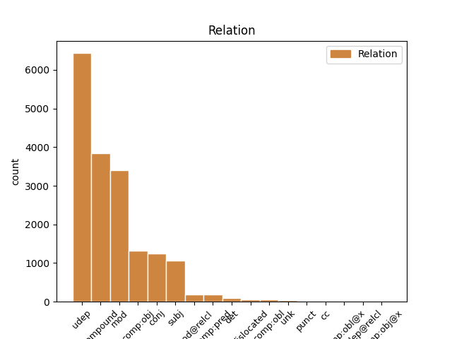
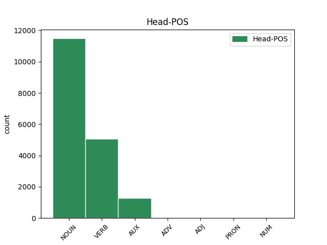
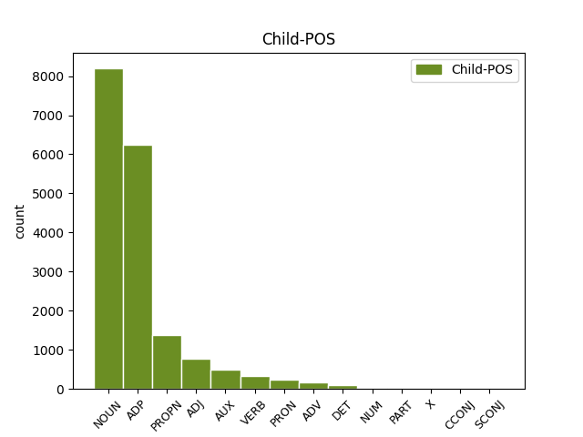

Distribution of features within this leaf



Agreement Rules sorted by frequency.
- When the dependent token is the underspecified dependency(udep) of the head token, and the head token is NOUN
1 ایڈمرل _ _ _ _ 0 _ _ _
2 مولن _ _ _ _ 0 _ _ _
3 نے _ _ _ _ 0 _ _ _
4 امریکہ _ _ _ _ 0 _ _ _
5 کی _ _ _ _ 0 _ _ _
6 جانب _ _ _ _ 0 _ _ _
7 سے _ _ _ _ 0 _ _ _
8 اعتماد _ _ _ _ 0 _ _ _
9 کے _ _ _ _ 0 _ _ _
10 فقدان _ _ _ _ 0 _ _ _
11 پر _ _ _ _ 0 _ _ _
12 بات _ _ _ _ 0 _ _ _
13 کرتے _ _ _ _ 0 _ _ _
14 ہوئے _ _ _ _ 0 _ _ _
15 کہا _ _ _ _ 0 _ _ _
16 کہ _ _ _ _ 0 _ _ _
17 آئی _ _ _ _ 0 _ _ _
18 ایس _ _ _ _ 0 _ _ _
19 آئی _ _ _ _ 0 _ _ _
20 کے _ _ _ _ 0 _ _ _
21 بعض _ _ _ _ 0 _ _ _
22 عناصر _ _ _ _ 0 _ _ _
23 حقانی _ _ _ _ 0 _ _ _
24 نیٹورک _ _ _ _ 0 _ _ _
25 کی کا ADP PSP AdpType=Post|Case=Acc|Gender=Fem|Number=Sing 26 udep _ ChunkId=NP8|ChunkType=child
26 مدد مدد NOUN NN Case=Nom|Gender=Fem|Number=Sing|Person=3 0 _ _ _
27 کر _ _ _ _ 0 _ _ _
28 رہے _ _ _ _ 0 _ _ _
29 ہےں _ _ _ _ 0 _ _ _
30 ۔ _ _ _ _ 0 _ _ _
1 امریکی _ _ _ _ 0 _ _ _
2 مسلح _ _ _ _ 0 _ _ _
3 افواج _ _ _ _ 0 _ _ _
4 کے _ _ _ _ 0 _ _ _
5 سربراہ _ _ _ _ 0 _ _ _
6 چیرمین _ _ _ _ 0 _ _ _
7 جوائنٹ _ _ _ _ 0 _ _ _
8 چیفس _ _ _ _ 0 _ _ _
9 آف _ _ _ _ 0 _ _ _
10 اسٹاف _ _ _ _ 0 _ _ _
11 ایڈمرل _ _ _ _ 0 _ _ _
12 مائیک _ _ _ _ 0 _ _ _
13 مولن _ _ _ _ 0 _ _ _
14 نے _ _ _ _ 0 _ _ _
15 جنگ _ _ _ _ 0 _ _ _
16 کو _ _ _ _ 0 _ _ _
17 انٹرویو _ _ _ _ 0 _ _ _
18 دیتے _ _ _ _ 0 _ _ _
19 ہوئے _ _ _ _ 0 _ _ _
20 اس _ _ _ _ 0 _ _ _
21 بات _ _ _ _ 0 _ _ _
22 کا _ _ _ _ 0 _ _ _
23 اعتراف _ _ _ _ 0 _ _ _
24 کیا _ _ _ _ 0 _ _ _
25 ہے _ _ _ _ 0 _ _ _
26 کہ _ _ _ _ 0 _ _ _
27 پاک _ _ _ _ 0 _ _ _
28 امریکہ امریکہ PROPN NNP Case=Nom|Gender=Masc|Number=Sing|Person=3 29 mod _ ChunkId=NP8|ChunkType=child|Tam=0|Vib=0
29 تعلقات تعلق NOUN NN Case=Nom|Gender=Masc|Number=Plur|Person=3 0 _ _ _
30 گزشتہ _ _ _ _ 0 _ _ _
31 کئی _ _ _ _ 0 _ _ _
32 ماہ _ _ _ _ 0 _ _ _
33 سے _ _ _ _ 0 _ _ _
34 مشکلات _ _ _ _ 0 _ _ _
35 کا _ _ _ _ 0 _ _ _
36 شکار _ _ _ _ 0 _ _ _
37 ہےں _ _ _ _ 0 _ _ _
38 اور _ _ _ _ 0 _ _ _
39 دونوں _ _ _ _ 0 _ _ _
40 ملکوں _ _ _ _ 0 _ _ _
41 کے _ _ _ _ 0 _ _ _
42 درمیان _ _ _ _ 0 _ _ _
43 اعتماد _ _ _ _ 0 _ _ _
44 کا _ _ _ _ 0 _ _ _
45 فقدان _ _ _ _ 0 _ _ _
46 ہے _ _ _ _ 0 _ _ _
47 ۔ _ _ _ _ 0 _ _ _
1 اس _ _ _ _ 0 _ _ _
2 کے _ _ _ _ 0 _ _ _
3 ساتھ _ _ _ _ 0 _ _ _
4 ہی _ _ _ _ 0 _ _ _
5 انہوں _ _ _ _ 0 _ _ _
6 نے _ _ _ _ 0 _ _ _
7 اس _ _ _ _ 0 _ _ _
8 بات _ _ _ _ 0 _ _ _
9 کا _ _ _ _ 0 _ _ _
10 اعادہ اعادہ NOUN NN Case=Acc|Gender=Masc|Number=Sing|Person=3 12 compound _ ChunkId=NP4|ChunkType=head|Tam=0|Vib=0
11 بھی _ _ _ _ 0 _ _ _
12 کیا کر VERB VM Aspect=Perf|Gender=Masc|Number=Sing|Person=3|VerbForm=Part|Voice=Act 0 _ _ _
13 کہ _ _ _ _ 0 _ _ _
14 ہم _ _ _ _ 0 _ _ _
15 ماضی _ _ _ _ 0 _ _ _
16 کی _ _ _ _ 0 _ _ _
17 غلطیاں _ _ _ _ 0 _ _ _
18 نہیں _ _ _ _ 0 _ _ _
19 دہرائیں _ _ _ _ 0 _ _ _
20 گے _ _ _ _ 0 _ _ _
21 ۔ _ _ _ _ 0 _ _ _
1 افغانستان _ _ _ _ 0 _ _ _
2 مےں _ _ _ _ 0 _ _ _
3 امریکی _ _ _ _ 0 _ _ _
4 مداخلت _ _ _ _ 0 _ _ _
5 کے _ _ _ _ 0 _ _ _
6 حوالے _ _ _ _ 0 _ _ _
7 سے _ _ _ _ 0 _ _ _
8 پاکستان _ _ _ _ 0 _ _ _
9 کے _ _ _ _ 0 _ _ _
10 بارے _ _ _ _ 0 _ _ _
11 مےں _ _ _ _ 0 _ _ _
12 امریکی _ _ _ _ 0 _ _ _
13 پالیسی _ _ _ _ 0 _ _ _
14 مےں _ _ _ _ 0 _ _ _
15 '' _ _ _ _ 0 _ _ _
16 ڈومور _ _ _ _ 0 _ _ _
17 '' _ _ _ _ 0 _ _ _
18 کا _ _ _ _ 0 _ _ _
19 لفظ _ _ _ _ 0 _ _ _
20 بار بار NOUN NN Case=Nom|Gender=Masc|Number=Sing|Person=3 0 _ _ _
21 بار بار NOUN RDP Case=Nom|Echo=Rdp|Gender=Masc|Number=Sing 20 compound _ ChunkId=NP6|ChunkType=child
22 دہرایا _ _ _ _ 0 _ _ _
23 جاتا _ _ _ _ 0 _ _ _
24 رہا _ _ _ _ 0 _ _ _
25 ہے _ _ _ _ 0 _ _ _
26 حالانکہ _ _ _ _ 0 _ _ _
27 اس _ _ _ _ 0 _ _ _
28 جنگ _ _ _ _ 0 _ _ _
29 مےں _ _ _ _ 0 _ _ _
30 پاکستانیوں _ _ _ _ 0 _ _ _
31 کی _ _ _ _ 0 _ _ _
32 قربانیاں _ _ _ _ 0 _ _ _
33 سب _ _ _ _ 0 _ _ _
34 سے _ _ _ _ 0 _ _ _
35 زیادہ _ _ _ _ 0 _ _ _
36 ہےں _ _ _ _ 0 _ _ _
37 ۔ _ _ _ _ 0 _ _ _
1 امریکی _ _ _ _ 0 _ _ _
2 مسلح _ _ _ _ 0 _ _ _
3 افواج _ _ _ _ 0 _ _ _
4 کے _ _ _ _ 0 _ _ _
5 سربراہ _ _ _ _ 0 _ _ _
6 چیرمین _ _ _ _ 0 _ _ _
7 جوائنٹ _ _ _ _ 0 _ _ _
8 چیفس _ _ _ _ 0 _ _ _
9 آف _ _ _ _ 0 _ _ _
10 اسٹاف _ _ _ _ 0 _ _ _
11 ایڈمرل _ _ _ _ 0 _ _ _
12 مائیک _ _ _ _ 0 _ _ _
13 مولن _ _ _ _ 0 _ _ _
14 نے _ _ _ _ 0 _ _ _
15 جنگ _ _ _ _ 0 _ _ _
16 کو _ _ _ _ 0 _ _ _
17 انٹرویو انٹرویو NOUN NN Case=Nom|Gender=Masc|Number=Sing|Person=3 18 comp:obj _ ChunkId=NP5|ChunkType=head|Tam=0|Vib=0
18 دیتے دے VERB VM Aspect=Imp|Gender=Masc|Number=Plur|VerbForm=Part|Voice=Act 0 _ _ _
19 ہوئے _ _ _ _ 0 _ _ _
20 اس _ _ _ _ 0 _ _ _
21 بات _ _ _ _ 0 _ _ _
22 کا _ _ _ _ 0 _ _ _
23 اعتراف _ _ _ _ 0 _ _ _
24 کیا _ _ _ _ 0 _ _ _
25 ہے _ _ _ _ 0 _ _ _
26 کہ _ _ _ _ 0 _ _ _
27 پاک _ _ _ _ 0 _ _ _
28 امریکہ _ _ _ _ 0 _ _ _
29 تعلقات _ _ _ _ 0 _ _ _
30 گزشتہ _ _ _ _ 0 _ _ _
31 کئی _ _ _ _ 0 _ _ _
32 ماہ _ _ _ _ 0 _ _ _
33 سے _ _ _ _ 0 _ _ _
34 مشکلات _ _ _ _ 0 _ _ _
35 کا _ _ _ _ 0 _ _ _
36 شکار _ _ _ _ 0 _ _ _
37 ہےں _ _ _ _ 0 _ _ _
38 اور _ _ _ _ 0 _ _ _
39 دونوں _ _ _ _ 0 _ _ _
40 ملکوں _ _ _ _ 0 _ _ _
41 کے _ _ _ _ 0 _ _ _
42 درمیان _ _ _ _ 0 _ _ _
43 اعتماد _ _ _ _ 0 _ _ _
44 کا _ _ _ _ 0 _ _ _
45 فقدان _ _ _ _ 0 _ _ _
46 ہے _ _ _ _ 0 _ _ _
47 ۔ _ _ _ _ 0 _ _ _
1 ہمیں _ _ _ _ 0 _ _ _
2 تادیبی _ _ _ _ 0 _ _ _
3 کارروائی _ _ _ _ 0 _ _ _
4 کا _ _ _ _ 0 _ _ _
5 کوئی _ _ _ _ 0 _ _ _
6 ڈر ڈر NOUN NN Case=Acc|Gender=Masc|Number=Sing|Person=3 0 _ _ _
7 و _ _ _ _ 0 _ _ _
8 خوف خوف NOUN NN Case=Nom|Gender=Masc|Number=Sing|Person=3 6 conj _ ChunkId=NP4|ChunkType=head|Tam=0|Vib=0
9 نہیں _ _ _ _ 0 _ _ _
10 ہے _ _ _ _ 0 _ _ _
11 ۔ _ _ _ _ 0 _ _ _
1 مسز _ _ _ _ 0 _ _ _
2 کونڈا _ _ _ _ 0 _ _ _
3 سریکھا _ _ _ _ 0 _ _ _
4 نے _ _ _ _ 0 _ _ _
5 کہا _ _ _ _ 0 _ _ _
6 کہ _ _ _ _ 0 _ _ _
7 ضمنی _ _ _ _ 0 _ _ _
8 انتخابات _ _ _ _ 0 _ _ _
9 کے _ _ _ _ 0 _ _ _
10 بعد _ _ _ _ 0 _ _ _
11 جگن _ _ _ _ 0 _ _ _
12 موہن _ _ _ _ 0 _ _ _
13 ریڈی _ _ _ _ 0 _ _ _
14 تلنگانہ _ _ _ _ 0 _ _ _
15 پر _ _ _ _ 0 _ _ _
16 اپنے _ _ _ _ 0 _ _ _
17 موقف _ _ _ _ 0 _ _ _
18 کا _ _ _ _ 0 _ _ _
19 اظہار _ _ _ _ 0 _ _ _
20 کریں _ _ _ _ 0 _ _ _
21 گے _ _ _ _ 0 _ _ _
22 اور _ _ _ _ 0 _ _ _
23 ریاست _ _ _ _ 0 _ _ _
24 مےں _ _ _ _ 0 _ _ _
25 کانگریس _ _ _ _ 0 _ _ _
26 حکومت حکومت PROPN NNP Case=Acc|Gender=Fem|Number=Sing|Person=3 32 subj _ ChunkId=NP9|ChunkType=head|Tam=0|Vib=0
27 زوال _ _ _ _ 0 _ _ _
28 سے _ _ _ _ 0 _ _ _
29 دوچار _ _ _ _ 0 _ _ _
30 ہو _ _ _ _ 0 _ _ _
31 جائے _ _ _ _ 0 _ _ _
32 گی گی AUX VAUX Gender=Fem|Mood=Ind|Number=Sing|Person=3|Tense=Fut|VerbForm=Fin 0 _ _ _
33 ۔ _ _ _ _ 0 _ _ _
1 اس _ _ _ _ 0 _ _ _
2 کے _ _ _ _ 0 _ _ _
3 ساتھ ساتھ ADP NST AdpType=Post|Gender=Masc|Number=Sing 12 udep _ AltTag=ADP-NOUN|ChunkId=NP|ChunkType=child
4 ہی _ _ _ _ 0 _ _ _
5 انہوں _ _ _ _ 0 _ _ _
6 نے _ _ _ _ 0 _ _ _
7 اس _ _ _ _ 0 _ _ _
8 بات _ _ _ _ 0 _ _ _
9 کا _ _ _ _ 0 _ _ _
10 اعادہ _ _ _ _ 0 _ _ _
11 بھی _ _ _ _ 0 _ _ _
12 کیا کر VERB VM Aspect=Perf|Gender=Masc|Number=Sing|Person=3|VerbForm=Part|Voice=Act 0 _ _ _
13 کہ _ _ _ _ 0 _ _ _
14 ہم _ _ _ _ 0 _ _ _
15 ماضی _ _ _ _ 0 _ _ _
16 کی _ _ _ _ 0 _ _ _
17 غلطیاں _ _ _ _ 0 _ _ _
18 نہیں _ _ _ _ 0 _ _ _
19 دہرائیں _ _ _ _ 0 _ _ _
20 گے _ _ _ _ 0 _ _ _
21 ۔ _ _ _ _ 0 _ _ _
1 کانگریس _ _ _ _ 0 _ _ _
2 کی _ _ _ _ 0 _ _ _
3 رکن رکن NOUN NN Case=Nom|Gender=Masc|Number=Sing|Person=3 24 subj _ ChunkId=NP2|ChunkType=head|Tam=0|Vib=0
4 اسمبلی _ _ _ _ 0 _ _ _
5 نے _ _ _ _ 0 _ _ _
6 ان _ _ _ _ 0 _ _ _
7 کے _ _ _ _ 0 _ _ _
8 شوہر _ _ _ _ 0 _ _ _
9 ایم _ _ _ _ 0 _ _ _
10 ایل _ _ _ _ 0 _ _ _
11 سی _ _ _ _ 0 _ _ _
12 مسٹر _ _ _ _ 0 _ _ _
13 کونڈا _ _ _ _ 0 _ _ _
14 مرلی _ _ _ _ 0 _ _ _
15 کی _ _ _ _ 0 _ _ _
16 سیکوریٹی _ _ _ _ 0 _ _ _
17 گھٹا _ _ _ _ 0 _ _ _
18 دینے _ _ _ _ 0 _ _ _
19 کی _ _ _ _ 0 _ _ _
20 سخت _ _ _ _ 0 _ _ _
21 مذمت _ _ _ _ 0 _ _ _
22 کرتے _ _ _ _ 0 _ _ _
23 ہوئے _ _ _ _ 0 _ _ _
24 کہا کہہ VERB VM Aspect=Perf|Gender=Masc|Number=Sing|VerbForm=Part|Voice=Act 0 _ _ _
25 کہ _ _ _ _ 0 _ _ _
26 اگر _ _ _ _ 0 _ _ _
27 ان _ _ _ _ 0 _ _ _
28 کے _ _ _ _ 0 _ _ _
29 شوہر _ _ _ _ 0 _ _ _
30 کو _ _ _ _ 0 _ _ _
31 کوئی _ _ _ _ 0 _ _ _
32 نقصان _ _ _ _ 0 _ _ _
33 پہونچتا _ _ _ _ 0 _ _ _
34 ہے _ _ _ _ 0 _ _ _
35 تو _ _ _ _ 0 _ _ _
36 اس _ _ _ _ 0 _ _ _
37 کی _ _ _ _ 0 _ _ _
38 ذمہ_داری _ _ _ _ 0 _ _ _
39 صدر _ _ _ _ 0 _ _ _
40 کانگریس _ _ _ _ 0 _ _ _
41 سونیا _ _ _ _ 0 _ _ _
42 گاندھی _ _ _ _ 0 _ _ _
43 کے _ _ _ _ 0 _ _ _
44 ساتھ _ _ _ _ 0 _ _ _
45 ساتھ _ _ _ _ 0 _ _ _
46 ریاستی _ _ _ _ 0 _ _ _
47 حکومت _ _ _ _ 0 _ _ _
48 پر _ _ _ _ 0 _ _ _
49 عائد _ _ _ _ 0 _ _ _
50 ہوگی _ _ _ _ 0 _ _ _
51 ۔ _ _ _ _ 0 _ _ _
1 مسز _ _ _ _ 0 _ _ _
2 کونڈا _ _ _ _ 0 _ _ _
3 سریکھا _ _ _ _ 0 _ _ _
4 نے _ _ _ _ 0 _ _ _
5 کہا _ _ _ _ 0 _ _ _
6 کہ _ _ _ _ 0 _ _ _
7 ضمنی _ _ _ _ 0 _ _ _
8 انتخابات _ _ _ _ 0 _ _ _
9 کے _ _ _ _ 0 _ _ _
10 بعد بعد ADP NST AdpType=Post|Case=Nom|Gender=Masc|Number=Sing|Person=3 21 udep _ AltTag=ADP-NOUN|ChunkId=NP2|ChunkType=child
11 جگن _ _ _ _ 0 _ _ _
12 موہن _ _ _ _ 0 _ _ _
13 ریڈی _ _ _ _ 0 _ _ _
14 تلنگانہ _ _ _ _ 0 _ _ _
15 پر _ _ _ _ 0 _ _ _
16 اپنے _ _ _ _ 0 _ _ _
17 موقف _ _ _ _ 0 _ _ _
18 کا _ _ _ _ 0 _ _ _
19 اظہار _ _ _ _ 0 _ _ _
20 کریں _ _ _ _ 0 _ _ _
21 گے گے AUX VAUX Gender=Masc|Mood=Ind|Number=Plur|Person=3|Tense=Fut|VerbForm=Fin 0 _ _ _
22 اور _ _ _ _ 0 _ _ _
23 ریاست _ _ _ _ 0 _ _ _
24 مےں _ _ _ _ 0 _ _ _
25 کانگریس _ _ _ _ 0 _ _ _
26 حکومت _ _ _ _ 0 _ _ _
27 زوال _ _ _ _ 0 _ _ _
28 سے _ _ _ _ 0 _ _ _
29 دوچار _ _ _ _ 0 _ _ _
30 ہو _ _ _ _ 0 _ _ _
31 جائے _ _ _ _ 0 _ _ _
32 گی _ _ _ _ 0 _ _ _
33 ۔ _ _ _ _ 0 _ _ _
1 صدر _ _ _ _ 0 _ _ _
2 پردیش _ _ _ _ 0 _ _ _
3 کانگریس _ _ _ _ 0 _ _ _
4 کمیٹی _ _ _ _ 0 _ _ _
5 مسٹر _ _ _ _ 0 _ _ _
6 ڈی _ _ _ _ 0 _ _ _
7 سرینواس _ _ _ _ 0 _ _ _
8 کی _ _ _ _ 0 _ _ _
9 جانب _ _ _ _ 0 _ _ _
10 سے _ _ _ _ 0 _ _ _
11 جگن _ _ _ _ 0 _ _ _
12 اور _ _ _ _ 0 _ _ _
13 بی _ _ _ _ 0 _ _ _
14 جے _ _ _ _ 0 _ _ _
15 پی _ _ _ _ 0 _ _ _
16 مےں _ _ _ _ 0 _ _ _
17 خفیہ _ _ _ _ 0 _ _ _
18 اتحاد _ _ _ _ 0 _ _ _
19 ہونے ہو VERB VM Gender=Masc|Number=Plur|VerbForm=Inf 0 _ _ _
20 اور _ _ _ _ 0 _ _ _
21 جگن _ _ _ _ 0 _ _ _
22 کو _ _ _ _ 0 _ _ _
23 دینے _ _ _ _ 0 _ _ _
24 والا _ _ _ _ 0 _ _ _
25 ووٹ _ _ _ _ 0 _ _ _
26 بی _ _ _ _ 0 _ _ _
27 جے _ _ _ _ 0 _ _ _
28 پی _ _ _ _ 0 _ _ _
29 کو _ _ _ _ 0 _ _ _
30 پڑنے پڑ VERB VM Gender=Masc|Number=Plur|VerbForm=Inf 19 conj _ ChunkId=VGNN3|ChunkType=head|Tam=nA|Vib=نا
31 جیسے _ _ _ _ 0 _ _ _
32 ریمارکس _ _ _ _ 0 _ _ _
33 کو _ _ _ _ 0 _ _ _
34 تکلیف_دہ _ _ _ _ 0 _ _ _
35 قرار _ _ _ _ 0 _ _ _
36 دیتے _ _ _ _ 0 _ _ _
37 ہوئے _ _ _ _ 0 _ _ _
38 کہا _ _ _ _ 0 _ _ _
39 کہ _ _ _ _ 0 _ _ _
40 جگن _ _ _ _ 0 _ _ _
41 موہن _ _ _ _ 0 _ _ _
42 ریڈی _ _ _ _ 0 _ _ _
43 نے _ _ _ _ 0 _ _ _
44 پہلے _ _ _ _ 0 _ _ _
45 ہی _ _ _ _ 0 _ _ _
46 بی _ _ _ _ 0 _ _ _
47 جے _ _ _ _ 0 _ _ _
48 پی _ _ _ _ 0 _ _ _
49 سے _ _ _ _ 0 _ _ _
50 اتحاد _ _ _ _ 0 _ _ _
51 نہ _ _ _ _ 0 _ _ _
52 کرنے _ _ _ _ 0 _ _ _
53 اپنی _ _ _ _ 0 _ _ _
54 جماعت _ _ _ _ 0 _ _ _
55 سیکولر _ _ _ _ 0 _ _ _
56 ہونے _ _ _ _ 0 _ _ _
57 کا _ _ _ _ 0 _ _ _
58 اعلان _ _ _ _ 0 _ _ _
59 کیا _ _ _ _ 0 _ _ _
60 ہے _ _ _ _ 0 _ _ _
61 ۔ _ _ _ _ 0 _ _ _
1 انہوں _ _ _ _ 0 _ _ _
2 نے _ _ _ _ 0 _ _ _
3 جی _ _ _ _ 0 _ _ _
4 او _ _ _ _ 0 _ _ _
5 177 _ _ _ _ 0 _ _ _
6 کو _ _ _ _ 0 _ _ _
7 تلنگانہ _ _ _ _ 0 _ _ _
8 تحریک _ _ _ _ 0 _ _ _
9 کے _ _ _ _ 0 _ _ _
10 خلاف _ _ _ _ 0 _ _ _
11 حکومت _ _ _ _ 0 _ _ _
12 کا _ _ _ _ 0 _ _ _
13 ہتھیار ہتھیار NOUN NN Case=Nom|Gender=Masc|Number=Sing|Person=3 15 mod _ ChunkId=NP5|ChunkType=head|Tam=0|Vib=0
14 قرار _ _ _ _ 0 _ _ _
15 دیتے دے VERB VM Aspect=Imp|Gender=Masc|Number=Plur|VerbForm=Part 0 _ _ _
16 ہوئے _ _ _ _ 0 _ _ _
17 اس _ _ _ _ 0 _ _ _
18 سے _ _ _ _ 0 _ _ _
19 فوری _ _ _ _ 0 _ _ _
20 دستبرداری _ _ _ _ 0 _ _ _
21 اختیار _ _ _ _ 0 _ _ _
22 کرنے _ _ _ _ 0 _ _ _
23 کا _ _ _ _ 0 _ _ _
24 مطالبہ _ _ _ _ 0 _ _ _
25 کیا _ _ _ _ 0 _ _ _
26 ۔ _ _ _ _ 0 _ _ _
1 کانگریس _ _ _ _ 0 _ _ _
2 کے _ _ _ _ 0 _ _ _
3 رکن _ _ _ _ 0 _ _ _
4 برمن _ _ _ _ 0 _ _ _
5 نے _ _ _ _ 0 _ _ _
6 جو _ _ _ _ 0 _ _ _
7 اصل _ _ _ _ 0 _ _ _
8 مسودہ مسودہ NOUN NN Case=Nom|Gender=Masc|Number=Sing|Person=3 0 _ _ _
9 پیش _ _ _ _ 0 _ _ _
10 کیا _ _ _ _ 0 _ _ _
11 تھا _ _ _ _ 0 _ _ _
12 ، _ _ _ _ 0 _ _ _
13 اس _ _ _ _ 0 _ _ _
14 میں _ _ _ _ 0 _ _ _
15 صدر _ _ _ _ 0 _ _ _
16 امریکہ _ _ _ _ 0 _ _ _
17 سے _ _ _ _ 0 _ _ _
18 کہا _ _ _ _ 0 _ _ _
19 گیا _ _ _ _ 0 _ _ _
20 تھا تھا AUX VAUX Gender=Masc|Mood=Ind|Number=Sing|Person=3|Tense=Past|VerbForm=Fin 8 mod@relcl _ ChunkId=VGF2|ChunkType=child|Tam=WA|Vib=تھا
21 کہ _ _ _ _ 0 _ _ _
22 وہ _ _ _ _ 0 _ _ _
23 پاکستان _ _ _ _ 0 _ _ _
24 کی _ _ _ _ 0 _ _ _
25 جانب _ _ _ _ 0 _ _ _
26 سے _ _ _ _ 0 _ _ _
27 ہندوستان _ _ _ _ 0 _ _ _
28 میں _ _ _ _ 0 _ _ _
29 ہونے _ _ _ _ 0 _ _ _
30 والے _ _ _ _ 0 _ _ _
31 سرحد _ _ _ _ 0 _ _ _
32 پار _ _ _ _ 0 _ _ _
33 دہشت_۔گردانہ _ _ _ _ 0 _ _ _
34 حملوں _ _ _ _ 0 _ _ _
35 کی _ _ _ _ 0 _ _ _
36 روک _ _ _ _ 0 _ _ _
37 تھام _ _ _ _ 0 _ _ _
38 کی _ _ _ _ 0 _ _ _
39 کوششوں _ _ _ _ 0 _ _ _
40 میں _ _ _ _ 0 _ _ _
41 ہونے _ _ _ _ 0 _ _ _
42 والی _ _ _ _ 0 _ _ _
43 پیشرفت _ _ _ _ 0 _ _ _
44 کے _ _ _ _ 0 _ _ _
45 تعلق _ _ _ _ 0 _ _ _
46 سے _ _ _ _ 0 _ _ _
47 صدارتی _ _ _ _ 0 _ _ _
48 تیقن _ _ _ _ 0 _ _ _
49 دیں _ _ _ _ 0 _ _ _
50 ۔ _ _ _ _ 0 _ _ _
1 چیف _ _ _ _ 0 _ _ _
2 منسٹر _ _ _ _ 0 _ _ _
3 نے _ _ _ _ 0 _ _ _
4 کہا _ _ _ _ 0 _ _ _
5 کہ _ _ _ _ 0 _ _ _
6 انہیں _ _ _ _ 0 _ _ _
7 وزیر _ _ _ _ 0 _ _ _
8 اعظم _ _ _ _ 0 _ _ _
9 سے _ _ _ _ 0 _ _ _
10 اس _ _ _ _ 0 _ _ _
11 طرح _ _ _ _ 0 _ _ _
12 کے _ _ _ _ 0 _ _ _
13 ریمارک _ _ _ _ 0 _ _ _
14 کی _ _ _ _ 0 _ _ _
15 امید امید NOUN NN Case=Nom|Gender=Fem|Number=Sing|Person=3 17 comp:pred _ ChunkId=NP6|ChunkType=head|Tam=0|Vib=0
16 نہیں _ _ _ _ 0 _ _ _
17 تھی تھا AUX VM Gender=Fem|Mood=Ind|Number=Sing|Person=3|Tense=Past|VerbForm=Fin|Voice=Act 0 _ _ _
18 ۔ _ _ _ _ 0 _ _ _
1 ان _ _ _ _ 0 _ _ _
2 کے _ _ _ _ 0 _ _ _
3 علاوہ _ _ _ _ 0 _ _ _
4 ایس _ _ _ _ 0 _ _ _
5 ایچ _ _ _ _ 0 _ _ _
6 او _ _ _ _ 0 _ _ _
7 کاماریڈی _ _ _ _ 0 _ _ _
8 پرکاش _ _ _ _ 0 _ _ _
9 یادو _ _ _ _ 0 _ _ _
10 کو _ _ _ _ 0 _ _ _
11 بھی _ _ _ _ 0 _ _ _
12 اسی یہ DET DEM Case=Acc|Gender=Fem|Number=Sing|PronType=Dem 13 det _ ChunkId=NP3|ChunkType=child
13 جگہ جگہ NOUN NN Case=Acc|Gender=Fem|Number=Sing|Person=3 0 _ _ _
14 پر _ _ _ _ 0 _ _ _
15 برقرار _ _ _ _ 0 _ _ _
16 رکھا _ _ _ _ 0 _ _ _
17 ۔ _ _ _ _ 0 _ _ _
1 انڈیا _ _ _ _ 0 _ _ _
2 ٹوڈے _ _ _ _ 0 _ _ _
3 کو _ _ _ _ 0 _ _ _
4 ایک _ _ _ _ 0 _ _ _
5 انٹرویو _ _ _ _ 0 _ _ _
6 دیتے _ _ _ _ 0 _ _ _
7 ہوئے _ _ _ _ 0 _ _ _
8 صدرموصوف _ _ _ _ 0 _ _ _
9 نے _ _ _ _ 0 _ _ _
10 کہا _ _ _ _ 0 _ _ _
11 کہ _ _ _ _ 0 _ _ _
12 کاش کاش X INJ Case=Nom|Gender=Masc|Number=Sing|Person=3 18 mod _ ChunkId=RBP|ChunkType=head|Tam=0|Vib=0
13 ہم _ _ _ _ 0 _ _ _
14 پربھاکرن _ _ _ _ 0 _ _ _
15 کو _ _ _ _ 0 _ _ _
16 زندہ _ _ _ _ 0 _ _ _
17 پکڑ _ _ _ _ 0 _ _ _
18 پاتے پا AUX VAUX Aspect=Imp|Gender=Masc|Number=Plur|VerbForm=Part 0 _ _ _
19 ! _ _ _ _ 0 _ _ _
20 تاکہ _ _ _ _ 0 _ _ _
21 آنجہانی _ _ _ _ 0 _ _ _
22 راجیوگاندھی _ _ _ _ 0 _ _ _
23 کے _ _ _ _ 0 _ _ _
24 قتل _ _ _ _ 0 _ _ _
25 کا _ _ _ _ 0 _ _ _
26 مقدمہ _ _ _ _ 0 _ _ _
27 چلایا _ _ _ _ 0 _ _ _
28 جا _ _ _ _ 0 _ _ _
29 سکتا _ _ _ _ 0 _ _ _
30 ۔ _ _ _ _ 0 _ _ _
1 انٹرویو _ _ _ _ 0 _ _ _
2 کے _ _ _ _ 0 _ _ _
3 دوران _ _ _ _ 0 _ _ _
4 انھوں _ _ _ _ 0 _ _ _
5 نے _ _ _ _ 0 _ _ _
6 ازراہ _ _ _ _ 0 _ _ _
7 مذاق _ _ _ _ 0 _ _ _
8 مسکراتے _ _ _ _ 0 _ _ _
9 ہوئے _ _ _ _ 0 _ _ _
10 کہا _ _ _ _ 0 _ _ _
11 کہ _ _ _ _ 0 _ _ _
12 اگر _ _ _ _ 0 _ _ _
13 پربھاکرن _ _ _ _ 0 _ _ _
14 زندہ _ _ _ _ 0 _ _ _
15 پکڑ _ _ _ _ 0 _ _ _
16 لیا _ _ _ _ 0 _ _ _
17 جاتا _ _ _ _ 0 _ _ _
18 تو _ _ _ _ 0 _ _ _
19 اسے _ _ _ _ 0 _ _ _
20 ہندوستان _ _ _ _ 0 _ _ _
21 کے _ _ _ _ 0 _ _ _
22 حوالے _ _ _ _ 0 _ _ _
23 کر _ _ _ _ 0 _ _ _
24 دیا _ _ _ _ 0 _ _ _
25 جاتا _ _ _ _ 0 _ _ _
26 اور _ _ _ _ 0 _ _ _
27 وہ _ _ _ _ 0 _ _ _
28 بعد _ _ _ _ 0 _ _ _
29 ازآں _ _ _ _ 0 _ _ _
30 ہندوستان _ _ _ _ 0 _ _ _
31 کا _ _ _ _ 0 _ _ _
32 سر _ _ _ _ 0 _ _ _
33 درد درد NOUN NN Case=Nom|Gender=Masc|Number=Sing|Person=3 34 comp:pred _ ChunkId=NP11|ChunkType=head|Tam=0|Vib=0
34 ہوتا ہو VERB VM Aspect=Imp|Gender=Masc|Number=Sing|VerbForm=Part|Voice=Act 0 _ _ _
35 ( _ _ _ _ 0 _ _ _
36 تمام _ _ _ _ 0 _ _ _
37 تر _ _ _ _ 0 _ _ _
38 ذمہ_داری _ _ _ _ 0 _ _ _
39 ہندوستان _ _ _ _ 0 _ _ _
40 پر _ _ _ _ 0 _ _ _
41 آجاتی _ _ _ _ 0 _ _ _
42 ) _ _ _ _ 0 _ _ _
43 ۔ _ _ _ _ 0 _ _ _
1 محکمہ _ _ _ _ 0 _ _ _
2 سوشل _ _ _ _ 0 _ _ _
3 ویلفیر _ _ _ _ 0 _ _ _
4 کے _ _ _ _ 0 _ _ _
5 اسسٹنٹ اسسٹنٹ NOUN NNC Case=Nom|Gender=Masc|Number=Sing|Person=3 0 _ _ _
6 انجینئر انجینئر NOUN NNC Case=Acc|Gender=Masc|Number=Sing|Person=3 5 comp:obj _ ChunkId=NP2|ChunkType=head|Tam=0|Vib=0
7 مسٹر _ _ _ _ 0 _ _ _
8 پرتاب _ _ _ _ 0 _ _ _
9 کو _ _ _ _ 0 _ _ _
10 20 _ _ _ _ 0 _ _ _
11 ہزار _ _ _ _ 0 _ _ _
12 روپئے _ _ _ _ 0 _ _ _
13 کی _ _ _ _ 0 _ _ _
14 رشوت _ _ _ _ 0 _ _ _
15 قبول _ _ _ _ 0 _ _ _
16 کرتے _ _ _ _ 0 _ _ _
17 ہوئے _ _ _ _ 0 _ _ _
18 اے _ _ _ _ 0 _ _ _
19 سی _ _ _ _ 0 _ _ _
20 بی _ _ _ _ 0 _ _ _
21 ڈی _ _ _ _ 0 _ _ _
22 ایس _ _ _ _ 0 _ _ _
23 پی _ _ _ _ 0 _ _ _
24 مسٹر _ _ _ _ 0 _ _ _
25 کروناندھی _ _ _ _ 0 _ _ _
26 کی _ _ _ _ 0 _ _ _
27 قیادت _ _ _ _ 0 _ _ _
28 میں _ _ _ _ 0 _ _ _
29 اے _ _ _ _ 0 _ _ _
30 سی _ _ _ _ 0 _ _ _
31 بی _ _ _ _ 0 _ _ _
32 ٹیم _ _ _ _ 0 _ _ _
33 نے _ _ _ _ 0 _ _ _
34 رنگے _ _ _ _ 0 _ _ _
35 ہاتھوں _ _ _ _ 0 _ _ _
36 گرفتار _ _ _ _ 0 _ _ _
37 کر _ _ _ _ 0 _ _ _
38 لیا _ _ _ _ 0 _ _ _
39 ۔ _ _ _ _ 0 _ _ _
1 ارکان _ _ _ _ 0 _ _ _
2 اسمبلی _ _ _ _ 0 _ _ _
3 کے _ _ _ _ 0 _ _ _
4 خلاف _ _ _ _ 0 _ _ _
5 مرحلہ_واری _ _ _ _ 0 _ _ _
6 کے _ _ _ _ 0 _ _ _
7 بجائے _ _ _ _ 0 _ _ _
8 تمام _ _ _ _ 0 _ _ _
9 ارکان ارکان NOUN NN Case=Nom|Gender=Masc|Number=Sing|Person=3 0 _ _ _
10 اسمبلی _ _ _ _ 0 _ _ _
11 کے کے ADP PSP AdpType=Post|Case=Acc|Gender=Masc|Number=Sing 9 dislocated _ ChunkId=FRAGP2|ChunkType=head
12 خلاف _ _ _ _ 0 _ _ _
13 کارروائی _ _ _ _ 0 _ _ _
14 کرنے _ _ _ _ 0 _ _ _
15 کا _ _ _ _ 0 _ _ _
16 انہوں _ _ _ _ 0 _ _ _
17 نے _ _ _ _ 0 _ _ _
18 چیلنج _ _ _ _ 0 _ _ _
19 کیا _ _ _ _ 0 _ _ _
20 ۔ _ _ _ _ 0 _ _ _
1 درخواست_گزار _ _ _ _ 0 _ _ _
2 نے _ _ _ _ 0 _ _ _
3 وزارت وزارت NOUN NN Case=Nom|Gender=Masc|Number=Sing|Person=3 7 comp:obl _ ChunkId=NP2|ChunkType=head|Tam=0|Vib=ْ
4 فینانس _ _ _ _ 0 _ _ _
5 سے _ _ _ _ 0 _ _ _
6 سوال _ _ _ _ 0 _ _ _
7 کیا کر VERB VM Aspect=Perf|Gender=Masc|Number=Sing|VerbForm=Part|Voice=Act 0 _ _ _
8 تھا _ _ _ _ 0 _ _ _
9 کہ _ _ _ _ 0 _ _ _
10 اسے _ _ _ _ 0 _ _ _
11 سوئس _ _ _ _ 0 _ _ _
12 بینکوں _ _ _ _ 0 _ _ _
13 مےں _ _ _ _ 0 _ _ _
14 کالا _ _ _ _ 0 _ _ _
15 دھن _ _ _ _ 0 _ _ _
16 رکھنے _ _ _ _ 0 _ _ _
17 والوں _ _ _ _ 0 _ _ _
18 کے _ _ _ _ 0 _ _ _
19 انفرادی _ _ _ _ 0 _ _ _
20 یا _ _ _ _ 0 _ _ _
21 کمپنیوں _ _ _ _ 0 _ _ _
22 کے _ _ _ _ 0 _ _ _
23 نام _ _ _ _ 0 _ _ _
24 دیئے _ _ _ _ 0 _ _ _
25 جائیں _ _ _ _ 0 _ _ _
26 ۔ _ _ _ _ 0 _ _ _
1 ہندوستانی ہندوستانی NOUN NNC Case=Nom|Gender=Masc|Number=Sing|Person=3 2 punct _ ChunkId=NP|ChunkType=child|Tam=0|Vib=0
2 سفیر سفیر NOUN NNC Case=Acc|Gender=Masc|Number=Sing|Person=3 0 _ _ _
3 میرا _ _ _ _ 0 _ _ _
4 شنکر _ _ _ _ 0 _ _ _
5 نے _ _ _ _ 0 _ _ _
6 کہا _ _ _ _ 0 _ _ _
7 کہ _ _ _ _ 0 _ _ _
8 ہند _ _ _ _ 0 _ _ _
9 و _ _ _ _ 0 _ _ _
10 پاک _ _ _ _ 0 _ _ _
11 کے _ _ _ _ 0 _ _ _
12 مابین _ _ _ _ 0 _ _ _
13 بات_چیت _ _ _ _ 0 _ _ _
14 ثمرآور _ _ _ _ 0 _ _ _
15 ہونی _ _ _ _ 0 _ _ _
16 چاہیئے _ _ _ _ 0 _ _ _
17 ۔ _ _ _ _ 0 _ _ _
1 شیخ _ _ _ _ 0 _ _ _
2 پیٹ _ _ _ _ 0 _ _ _
3 درگاہ _ _ _ _ 0 _ _ _
4 کی _ _ _ _ 0 _ _ _
5 اوقافی _ _ _ _ 0 _ _ _
6 اراضی _ _ _ _ 0 _ _ _
7 پر _ _ _ _ 0 _ _ _
8 آج _ _ _ _ 0 _ _ _
9 تعمیراتی _ _ _ _ 0 _ _ _
10 کام _ _ _ _ 0 _ _ _
11 جاری _ _ _ _ 0 _ _ _
12 ہے _ _ _ _ 0 _ _ _
13 جہاں _ _ _ _ 0 _ _ _
14 کل _ _ _ _ 0 _ _ _
15 رات _ _ _ _ 0 _ _ _
16 دیر دیر NOUN NN Case=Acc|Gender=Masc|Number=Sing|Person=3 0 _ _ _
17 گئے جا PART RP Aspect=Perf|Gender=Masc|Number=Plur|VerbForm=Part 16 unk _ ChunkId=NP6|ChunkType=child|Tam=yA1|Vib=1یا
18 تک _ _ _ _ 0 _ _ _
19 تعمیراتی _ _ _ _ 0 _ _ _
20 کاموں _ _ _ _ 0 _ _ _
21 کو _ _ _ _ 0 _ _ _
22 روک _ _ _ _ 0 _ _ _
23 دینے _ _ _ _ 0 _ _ _
24 کا _ _ _ _ 0 _ _ _
25 مطالبہ _ _ _ _ 0 _ _ _
26 کرتے _ _ _ _ 0 _ _ _
27 ہوئے _ _ _ _ 0 _ _ _
28 مسلم _ _ _ _ 0 _ _ _
29 نوجوانوں _ _ _ _ 0 _ _ _
30 نے _ _ _ _ 0 _ _ _
31 احتجاج _ _ _ _ 0 _ _ _
32 کیا _ _ _ _ 0 _ _ _
33 تھا _ _ _ _ 0 _ _ _
34 اور _ _ _ _ 0 _ _ _
35 احتجاج _ _ _ _ 0 _ _ _
36 کے _ _ _ _ 0 _ _ _
37 دوران _ _ _ _ 0 _ _ _
38 پولیس _ _ _ _ 0 _ _ _
39 لاٹھی _ _ _ _ 0 _ _ _
40 چارج _ _ _ _ 0 _ _ _
41 اور _ _ _ _ 0 _ _ _
42 پتھراؤ _ _ _ _ 0 _ _ _
43 کے _ _ _ _ 0 _ _ _
44 واقعات _ _ _ _ 0 _ _ _
45 پیش _ _ _ _ 0 _ _ _
46 آئے _ _ _ _ 0 _ _ _
47 تھے _ _ _ _ 0 _ _ _
48 ۔ _ _ _ _ 0 _ _ _
1 انٹرویو _ _ _ _ 0 _ _ _
2 کے _ _ _ _ 0 _ _ _
3 دوران _ _ _ _ 0 _ _ _
4 انھوں _ _ _ _ 0 _ _ _
5 نے _ _ _ _ 0 _ _ _
6 ازراہ _ _ _ _ 0 _ _ _
7 مذاق _ _ _ _ 0 _ _ _
8 مسکراتے _ _ _ _ 0 _ _ _
9 ہوئے _ _ _ _ 0 _ _ _
10 کہا _ _ _ _ 0 _ _ _
11 کہ _ _ _ _ 0 _ _ _
12 اگر _ _ _ _ 0 _ _ _
13 پربھاکرن _ _ _ _ 0 _ _ _
14 زندہ _ _ _ _ 0 _ _ _
15 پکڑ _ _ _ _ 0 _ _ _
16 لیا _ _ _ _ 0 _ _ _
17 جاتا _ _ _ _ 0 _ _ _
18 تو _ _ _ _ 0 _ _ _
19 اسے _ _ _ _ 0 _ _ _
20 ہندوستان _ _ _ _ 0 _ _ _
21 کے _ _ _ _ 0 _ _ _
22 حوالے _ _ _ _ 0 _ _ _
23 کر _ _ _ _ 0 _ _ _
24 دیا _ _ _ _ 0 _ _ _
25 جاتا جا AUX VAUX Aspect=Imp|Gender=Masc|Person=3|VerbForm=Part 0 _ _ _
26 اور _ _ _ _ 0 _ _ _
27 وہ _ _ _ _ 0 _ _ _
28 بعد _ _ _ _ 0 _ _ _
29 ازآں _ _ _ _ 0 _ _ _
30 ہندوستان _ _ _ _ 0 _ _ _
31 کا _ _ _ _ 0 _ _ _
32 سر _ _ _ _ 0 _ _ _
33 درد _ _ _ _ 0 _ _ _
34 ہوتا ہو VERB VM Aspect=Imp|Gender=Masc|Number=Sing|VerbForm=Part|Voice=Act 25 conj _ ChunkId=VGF4|ChunkType=head|Stype=declarative|Tam=wA|Vib=تا
35 ( _ _ _ _ 0 _ _ _
36 تمام _ _ _ _ 0 _ _ _
37 تر _ _ _ _ 0 _ _ _
38 ذمہ_داری _ _ _ _ 0 _ _ _
39 ہندوستان _ _ _ _ 0 _ _ _
40 پر _ _ _ _ 0 _ _ _
41 آجاتی _ _ _ _ 0 _ _ _
42 ) _ _ _ _ 0 _ _ _
43 ۔ _ _ _ _ 0 _ _ _
1 ضرورت _ _ _ _ 0 _ _ _
2 ہو _ _ _ _ 0 _ _ _
3 تو _ _ _ _ 0 _ _ _
4 ضروری _ _ _ _ 0 _ _ _
5 کارروائی _ _ _ _ 0 _ _ _
6 بھی _ _ _ _ 0 _ _ _
7 کی کر VERB VM Aspect=Perf|Gender=Fem|Number=Sing|VerbForm=Part|Voice=Pass 0 _ _ _
8 جائے _ _ _ _ 0 _ _ _
9 گی گا AUX VAUX Gender=Fem|Mood=Ind|Number=Sing|Person=3|Tense=Fut|VerbForm=Fin 7 unk _ ChunkId=VGF2|ChunkType=child|SpaceAfter=No|Tam=gA|Vib=گا
10 ۔ _ _ _ _ 0 _ _ _
1 کچھ _ _ _ _ 0 _ _ _
2 دور _ _ _ _ 0 _ _ _
3 جانے _ _ _ _ 0 _ _ _
4 کے کے ADP PSP AdpType=Post|Case=Acc|Gender=Masc|Number=Sing 5 comp:obj _ ChunkId=VGNN|ChunkType=child
5 بعد بعد ADV NST AdpType=Post|Case=Nom|Gender=Masc|Number=Sing 0 _ _ _
6 اس _ _ _ _ 0 _ _ _
7 نے _ _ _ _ 0 _ _ _
8 پیچھے _ _ _ _ 0 _ _ _
9 مڑ _ _ _ _ 0 _ _ _
10 کر _ _ _ _ 0 _ _ _
11 دیکھا _ _ _ _ 0 _ _ _
12 تو _ _ _ _ 0 _ _ _
13 حیران _ _ _ _ 0 _ _ _
14 رہ _ _ _ _ 0 _ _ _
15 گیا _ _ _ _ 0 _ _ _
16 ۔ _ _ _ _ 0 _ _ _
1 ہر _ _ _ _ 0 _ _ _
2 موضوع _ _ _ _ 0 _ _ _
3 پر _ _ _ _ 0 _ _ _
4 غور _ _ _ _ 0 _ _ _
5 و غوروخوض CCONJ CC Case=Nom|Gender=Masc|Number=Sing|Person=3 6 cc _ ChunkId=CCP|ChunkType=head|Tam=0|Vib=0
6 خوض غوروخوض NOUN NN Case=Nom|Gender=Masc|Number=Sing|Person=3 0 _ _ _
7 کیا _ _ _ _ 0 _ _ _
8 جائےگا _ _ _ _ 0 _ _ _
9 چاہے _ _ _ _ 0 _ _ _
10 اس _ _ _ _ 0 _ _ _
11 مےں _ _ _ _ 0 _ _ _
12 ملک _ _ _ _ 0 _ _ _
13 کے _ _ _ _ 0 _ _ _
14 قائد _ _ _ _ 0 _ _ _
15 معمر _ _ _ _ 0 _ _ _
16 قذافی _ _ _ _ 0 _ _ _
17 کے _ _ _ _ 0 _ _ _
18 مستقبل _ _ _ _ 0 _ _ _
19 کا _ _ _ _ 0 _ _ _
20 معاملہ _ _ _ _ 0 _ _ _
21 ہی _ _ _ _ 0 _ _ _
22 کیوں _ _ _ _ 0 _ _ _
23 نہ _ _ _ _ 0 _ _ _
24 ہو _ _ _ _ 0 _ _ _
25 ۔ _ _ _ _ 0 _ _ _
1 بہرحال _ _ _ _ 0 _ _ _
2 ورنگل _ _ _ _ 0 _ _ _
3 میں _ _ _ _ 0 _ _ _
4 کے _ _ _ _ 0 _ _ _
5 سی _ _ _ _ 0 _ _ _
6 آر _ _ _ _ 0 _ _ _
7 کے _ _ _ _ 0 _ _ _
8 اقدام _ _ _ _ 0 _ _ _
9 سے _ _ _ _ 0 _ _ _
10 مسلمان مسلمان PROPN NNP Case=Nom|Gender=Masc|Number=Sing|Person=3 12 comp:obl _ ChunkId=NP4|ChunkType=head|Tam=0|Vib=ْ
11 سخت _ _ _ _ 0 _ _ _
12 ناراض ناراض NOUN NN Case=Nom|Gender=Masc|Number=Sing|Person=3 0 _ _ _
13 ہیں _ _ _ _ 0 _ _ _
14 - _ _ _ _ 0 _ _ _
1 1853 _ _ _ _ 0 _ _ _
2 ء _ _ _ _ 0 _ _ _
3 مےں _ _ _ _ 0 _ _ _
4 اس _ _ _ _ 0 _ _ _
5 عہد _ _ _ _ 0 _ _ _
6 کا _ _ _ _ 0 _ _ _
7 سب _ _ _ _ 0 _ _ _
8 سے _ _ _ _ 0 _ _ _
9 بڑا بڑا ADJ JJ Case=Nom|Gender=Masc|Number=Sing 0 _ _ _
10 جہاز جہاز NOUN NN Case=Nom|Gender=Masc|Number=Sing|Person=3 9 comp:obj _ ChunkId=NP3|ChunkType=head|Tam=0|Vib=0
11 Great _ _ _ _ 0 _ _ _
12 Republic _ _ _ _ 0 _ _ _
13 تھا _ _ _ _ 0 _ _ _
14 جو _ _ _ _ 0 _ _ _
15 335 _ _ _ _ 0 _ _ _
16 فٹ _ _ _ _ 0 _ _ _
17 لانبا _ _ _ _ 0 _ _ _
18 تھا _ _ _ _ 0 _ _ _
19 اور _ _ _ _ 0 _ _ _
20 4500 _ _ _ _ 0 _ _ _
21 ٹن _ _ _ _ 0 _ _ _
22 وزن _ _ _ _ 0 _ _ _
23 لے _ _ _ _ 0 _ _ _
24 جا _ _ _ _ 0 _ _ _
25 سکتا _ _ _ _ 0 _ _ _
26 تھا _ _ _ _ 0 _ _ _
27 ۔ _ _ _ _ 0 _ _ _
1 میرا _ _ _ _ 0 _ _ _
2 شنکر _ _ _ _ 0 _ _ _
3 کے _ _ _ _ 0 _ _ _
4 مطابق _ _ _ _ 0 _ _ _
5 اگر _ _ _ _ 0 _ _ _
6 ہند _ _ _ _ 0 _ _ _
7 و _ _ _ _ 0 _ _ _
8 پاک _ _ _ _ 0 _ _ _
9 بات_چیت _ _ _ _ 0 _ _ _
10 کو _ _ _ _ 0 _ _ _
11 ثمرآور _ _ _ _ 0 _ _ _
12 بنانے _ _ _ _ 0 _ _ _
13 کے _ _ _ _ 0 _ _ _
14 خواہاں _ _ _ _ 0 _ _ _
15 ہےں _ _ _ _ 0 _ _ _
16 تو _ _ _ _ 0 _ _ _
17 سب _ _ _ _ 0 _ _ _
18 سے _ _ _ _ 0 _ _ _
19 پہلے _ _ _ _ 0 _ _ _
20 پاکستان _ _ _ _ 0 _ _ _
21 کو _ _ _ _ 0 _ _ _
22 ہندوستان _ _ _ _ 0 _ _ _
23 کے _ _ _ _ 0 _ _ _
24 اس _ _ _ _ 0 _ _ _
25 خدشے _ _ _ _ 0 _ _ _
26 کو _ _ _ _ 0 _ _ _
27 دور _ _ _ _ 0 _ _ _
28 کرنا _ _ _ _ 0 _ _ _
29 ہوگا _ _ _ _ 0 _ _ _
30 جس _ _ _ _ 0 _ _ _
31 کے _ _ _ _ 0 _ _ _
32 تحت _ _ _ _ 0 _ _ _
33 ہندوستان _ _ _ _ 0 _ _ _
34 , _ _ _ _ 0 _ _ _
35 پاکستان _ _ _ _ 0 _ _ _
36 کو _ _ _ _ 0 _ _ _
37 ہی _ _ _ _ 0 _ _ _
38 دہشت_گردی _ _ _ _ 0 _ _ _
39 کا کا ADP PSP AdpType=Post|Case=Nom|Gender=Masc|Number=Sing 41 subj _ ChunkId=NP9|ChunkType=child
40 محفوظ _ _ _ _ 0 _ _ _
41 ٹھکانہ ٹھکانہ NOUN NN Case=Nom|Gender=Masc|Number=Sing|Person=3 0 _ _ _
42 تصور _ _ _ _ 0 _ _ _
43 کرتا _ _ _ _ 0 _ _ _
44 ہے _ _ _ _ 0 _ _ _
45 ۔ _ _ _ _ 0 _ _ _
1 دراصل _ _ _ _ 0 _ _ _
2 ہمیں _ _ _ _ 0 _ _ _
3 تو _ _ _ _ 0 _ _ _
4 یہی _ _ _ _ 0 _ _ _
5 ہمارا مےں PRON PRP Case=Nom|Gender=Masc|Number=Sing|Person=1|PronType=Prs 6 mod _ ChunkId=NP3|ChunkType=head|Tam=ka|Vib=کا
6 اندر اندر ADV NST AdpType=Post|Case=Acc|Gender=Masc|Number=Sing|Person=3 0 _ _ _
7 کا _ _ _ _ 0 _ _ _
8 بھیدی _ _ _ _ 0 _ _ _
9 ہی _ _ _ _ 0 _ _ _
10 نقصان _ _ _ _ 0 _ _ _
11 پہنچاتا _ _ _ _ 0 _ _ _
12 ہے _ _ _ _ 0 _ _ _
13 ۔ _ _ _ _ 0 _ _ _
1 تاہم _ _ _ _ 0 _ _ _
2 اس _ _ _ _ 0 _ _ _
3 مدت _ _ _ _ 0 _ _ _
4 کے _ _ _ _ 0 _ _ _
5 درمیان _ _ _ _ 0 _ _ _
6 جوانوں _ _ _ _ 0 _ _ _
7 کے _ _ _ _ 0 _ _ _
8 خلاف _ _ _ _ 0 _ _ _
9 انسانی _ _ _ _ 0 _ _ _
10 حقوق _ _ _ _ 0 _ _ _
11 کی _ _ _ _ 0 _ _ _
12 خلاف_ورزی _ _ _ _ 0 _ _ _
13 کا _ _ _ _ 0 _ _ _
14 کوئی کوئی PRON PRP Case=Nom|Gender=Masc|Number=Sing|PronType=Prs 0 _ _ _
15 مقدمہ مقدمہ NOUN NN Case=Nom|Gender=Masc|Number=Sing|Person=3 14 comp:obj _ ChunkId=NP5|ChunkType=head|Tam=0|Vib=0
16 درج _ _ _ _ 0 _ _ _
17 نہیں _ _ _ _ 0 _ _ _
18 کیا _ _ _ _ 0 _ _ _
19 گیا _ _ _ _ 0 _ _ _
20 ۔ _ _ _ _ 0 _ _ _
1 رکن _ _ _ _ 0 _ _ _
2 پارلیمنٹ _ _ _ _ 0 _ _ _
3 پرنم _ _ _ _ 0 _ _ _
4 پربھاکر _ _ _ _ 0 _ _ _
5 نے _ _ _ _ 0 _ _ _
6 مخاطب _ _ _ _ 0 _ _ _
7 کرتے _ _ _ _ 0 _ _ _
8 ہوئے _ _ _ _ 0 _ _ _
9 کہا _ _ _ _ 0 _ _ _
10 کہ _ _ _ _ 0 _ _ _
11 کریم _ _ _ _ 0 _ _ _
12 نگر _ _ _ _ 0 _ _ _
13 مےں _ _ _ _ 0 _ _ _
14 مسلم _ _ _ _ 0 _ _ _
15 بھائیوں _ _ _ _ 0 _ _ _
16 نے _ _ _ _ 0 _ _ _
17 ہمیشہ _ _ _ _ 0 _ _ _
18 کانگریس _ _ _ _ 0 _ _ _
19 کا کا ADP PSP AdpType=Post|Case=Nom|Gender=Masc|Number=Sing 20 udep _ ChunkId=NP4|ChunkType=child
20 ساتھ ساتھ ADV NST Case=Nom|Gender=Masc|Number=Sing|Person=3 0 _ _ _
21 دیا _ _ _ _ 0 _ _ _
22 ہے _ _ _ _ 0 _ _ _
23 ۔ _ _ _ _ 0 _ _ _
1 وہ _ _ _ _ 0 _ _ _
2 اپنے _ _ _ _ 0 _ _ _
3 چیکس _ _ _ _ 0 _ _ _
4 واپس _ _ _ _ 0 _ _ _
5 کرتے _ _ _ _ 0 _ _ _
6 ہوئے _ _ _ _ 0 _ _ _
7 اپنا _ _ _ _ 0 _ _ _
8 آن _ _ _ _ 0 _ _ _
9 لائن _ _ _ _ 0 _ _ _
10 اکاونٹ _ _ _ _ 0 _ _ _
11 نمبر _ _ _ _ 0 _ _ _
12 مائناریٹی _ _ _ _ 0 _ _ _
13 کارپوریشن _ _ _ _ 0 _ _ _
14 کو _ _ _ _ 0 _ _ _
15 دینے _ _ _ _ 0 _ _ _
16 پر _ _ _ _ 0 _ _ _
17 بھی _ _ _ _ 0 _ _ _
18 انہیں _ _ _ _ 0 _ _ _
19 ان _ _ _ _ 0 _ _ _
20 کے _ _ _ _ 0 _ _ _
21 اکاونٹ _ _ _ _ 0 _ _ _
22 پر _ _ _ _ 0 _ _ _
23 پہلی پہلا ADJ QO Gender=Fem|Number=Sing|NumType=Ord 0 _ _ _
24 اور _ _ _ _ 0 _ _ _
25 دوسری دوسرا ADJ QO Gender=Fem|NumType=Ord 23 conj _ ChunkId=JJP3|ChunkType=head
26 قسط _ _ _ _ 0 _ _ _
27 کے _ _ _ _ 0 _ _ _
28 تمام _ _ _ _ 0 _ _ _
29 اسکالرشپس _ _ _ _ 0 _ _ _
30 روانہ _ _ _ _ 0 _ _ _
31 کر _ _ _ _ 0 _ _ _
32 دیے _ _ _ _ 0 _ _ _
33 جائیںگے _ _ _ _ 0 _ _ _
34 ۔ _ _ _ _ 0 _ _ _
1 ایسے _ _ _ _ 0 _ _ _
2 میں _ _ _ _ 0 _ _ _
3 ملک _ _ _ _ 0 _ _ _
4 کی کا ADP PSP AdpType=Post|Case=Acc|Gender=Fem|Number=Sing 7 udep _ ChunkId=NP2|ChunkType=child
5 سب _ _ _ _ 0 _ _ _
6 سے _ _ _ _ 0 _ _ _
7 بڑی بڑی ADJ JJ Gender=Fem|Number=Sing 0 _ _ _
8 اور _ _ _ _ 0 _ _ _
9 اہم _ _ _ _ 0 _ _ _
10 ریاست _ _ _ _ 0 _ _ _
11 اترپردیش _ _ _ _ 0 _ _ _
12 میں _ _ _ _ 0 _ _ _
13 اقتدار _ _ _ _ 0 _ _ _
14 کی _ _ _ _ 0 _ _ _
15 دعویدار _ _ _ _ 0 _ _ _
16 سماج_وادی _ _ _ _ 0 _ _ _
17 پارٹی _ _ _ _ 0 _ _ _
18 نے _ _ _ _ 0 _ _ _
19 اپنی _ _ _ _ 0 _ _ _
20 شکست _ _ _ _ 0 _ _ _
21 کے _ _ _ _ 0 _ _ _
22 لیے _ _ _ _ 0 _ _ _
23 صرف _ _ _ _ 0 _ _ _
24 ایک _ _ _ _ 0 _ _ _
25 لیڈر _ _ _ _ 0 _ _ _
26 اعظم _ _ _ _ 0 _ _ _
27 خان _ _ _ _ 0 _ _ _
28 کو _ _ _ _ 0 _ _ _
29 ذمہ_دار _ _ _ _ 0 _ _ _
30 قرار _ _ _ _ 0 _ _ _
31 دیتے _ _ _ _ 0 _ _ _
32 ہوئے _ _ _ _ 0 _ _ _
33 انہیں _ _ _ _ 0 _ _ _
34 پارٹی _ _ _ _ 0 _ _ _
35 سے _ _ _ _ 0 _ _ _
36 چھ _ _ _ _ 0 _ _ _
37 سال _ _ _ _ 0 _ _ _
38 کے _ _ _ _ 0 _ _ _
39 لیے _ _ _ _ 0 _ _ _
40 خارج _ _ _ _ 0 _ _ _
41 کر _ _ _ _ 0 _ _ _
42 دیا _ _ _ _ 0 _ _ _
43 ہے _ _ _ _ 0 _ _ _
44 ۔ _ _ _ _ 0 _ _ _
1 یعنی _ _ _ _ 0 _ _ _
2 جہاں _ _ _ _ 0 _ _ _
3 انسانی _ _ _ _ 0 _ _ _
4 نفس _ _ _ _ 0 _ _ _
5 کا _ _ _ _ 0 _ _ _
6 تذکرہ _ _ _ _ 0 _ _ _
7 آیا آ VERB VM Aspect=Perf|Gender=Masc|Number=Sing|VerbForm=Part|Voice=Act 8 mod@relcl _ ChunkId=VGF|ChunkType=head|Stype=declarative|Tam=yA|Vib=یا
8 وہاں وہاں PRON PRP Case=Acc|Gender=Masc|Number=Sing|Person=3|PronType=Prs 0 _ _ _
9 قرآن _ _ _ _ 0 _ _ _
10 نے _ _ _ _ 0 _ _ _
11 '' _ _ _ _ 0 _ _ _
12 عظیم _ _ _ _ 0 _ _ _
13 '' _ _ _ _ 0 _ _ _
14 کا _ _ _ _ 0 _ _ _
15 لفظ _ _ _ _ 0 _ _ _
16 استعمال _ _ _ _ 0 _ _ _
17 کیا _ _ _ _ 0 _ _ _
18 اور _ _ _ _ 0 _ _ _
19 جہاں _ _ _ _ 0 _ _ _
20 شیطان _ _ _ _ 0 _ _ _
21 کے _ _ _ _ 0 _ _ _
22 مکر _ _ _ _ 0 _ _ _
23 کا _ _ _ _ 0 _ _ _
24 تذکرہ _ _ _ _ 0 _ _ _
25 آیا _ _ _ _ 0 _ _ _
26 , _ _ _ _ 0 _ _ _
27 وہاں _ _ _ _ 0 _ _ _
28 ضعیف _ _ _ _ 0 _ _ _
29 کا _ _ _ _ 0 _ _ _
30 لفظ _ _ _ _ 0 _ _ _
31 استعمال _ _ _ _ 0 _ _ _
32 کیا _ _ _ _ 0 _ _ _
33 ہے _ _ _ _ 0 _ _ _
34 ۔ _ _ _ _ 0 _ _ _
1 دن دن ADV RBC Case=Acc|Gender=Masc|Number=Sing 3 punct _ ChunkId=RBP|ChunkType=child
2 بہ _ _ _ _ 0 _ _ _
3 دن دن ADV RB Case=Nom|Gender=Masc|Number=Sing 0 _ _ _
4 حالت _ _ _ _ 0 _ _ _
5 بگڑتے _ _ _ _ 0 _ _ _
6 دیکھ _ _ _ _ 0 _ _ _
7 کر _ _ _ _ 0 _ _ _
8 ڈاکٹروں _ _ _ _ 0 _ _ _
9 نے _ _ _ _ 0 _ _ _
10 مکان _ _ _ _ 0 _ _ _
11 جانے _ _ _ _ 0 _ _ _
12 کا _ _ _ _ 0 _ _ _
13 مشورہ _ _ _ _ 0 _ _ _
14 دیا _ _ _ _ 0 _ _ _
15 تھا _ _ _ _ 0 _ _ _
16 ۔ _ _ _ _ 0 _ _ _
1 ای _ _ _ _ 0 _ _ _
2 ایس _ _ _ _ 0 _ _ _
3 آئی _ _ _ _ 0 _ _ _
4 دواخانے دواخانہ NOUN NN Case=Acc|Gender=Masc|Number=Sing|Person=3 14 mod _ ChunkId=NP|ChunkType=head|Tam=0|Vib=0
5 جہاں _ _ _ _ 0 _ _ _
6 ملازمین _ _ _ _ 0 _ _ _
7 کی _ _ _ _ 0 _ _ _
8 تعداد _ _ _ _ 0 _ _ _
9 کم _ _ _ _ 0 _ _ _
10 از _ _ _ _ 0 _ _ _
11 کم _ _ _ _ 0 _ _ _
12 دس _ _ _ _ 0 _ _ _
13 ہو _ _ _ _ 0 _ _ _
14 وہاں وہاں PRON PRP Case=Acc|Gender=Masc|Number=Sing|Person=3|PronType=Prs 0 _ _ _
15 پر _ _ _ _ 0 _ _ _
16 بھی _ _ _ _ 0 _ _ _
17 اب _ _ _ _ 0 _ _ _
18 ای _ _ _ _ 0 _ _ _
19 ایس _ _ _ _ 0 _ _ _
20 آئی _ _ _ _ 0 _ _ _
21 اسکیمات _ _ _ _ 0 _ _ _
22 کا _ _ _ _ 0 _ _ _
23 احاطہ _ _ _ _ 0 _ _ _
24 ہوگا _ _ _ _ 0 _ _ _
25 ۔ _ _ _ _ 0 _ _ _
1 / _ _ _ _ 0 _ _ _
2 6 _ _ _ _ 0 _ _ _
3 اپریل _ _ _ _ 0 _ _ _
4 2011 _ _ _ _ 0 _ _ _
5 ء _ _ _ _ 0 _ _ _
6 کو _ _ _ _ 0 _ _ _
7 این _ _ _ _ 0 _ _ _
8 آئی _ _ _ _ 0 _ _ _
9 اے _ _ _ _ 0 _ _ _
10 نے _ _ _ _ 0 _ _ _
11 مکہ _ _ _ _ 0 _ _ _
12 مسجد _ _ _ _ 0 _ _ _
13 بم _ _ _ _ 0 _ _ _
14 دھماکے _ _ _ _ 0 _ _ _
15 کیس _ _ _ _ 0 _ _ _
16 سے _ _ _ _ 0 _ _ _
17 متعلق _ _ _ _ 0 _ _ _
18 اےک _ _ _ _ 0 _ _ _
19 ایف _ _ _ _ 0 _ _ _
20 آئی _ _ _ _ 0 _ _ _
21 آر _ _ _ _ 0 _ _ _
22 جس _ _ _ _ 0 _ _ _
23 کا کا ADP PSP AdpType=Post|Case=Nom|Gender=Masc|Number=Sing 25 udep _ ChunkId=NP5|ChunkType=child
24 نمبر _ _ _ _ 0 _ _ _
25 02 02 NUM QC Case=Nom|Gender=Masc|Number=Sing|NumType=Card|Person=3 0 _ _ _
26 ہے _ _ _ _ 0 _ _ _
27 اور _ _ _ _ 0 _ _ _
28 اس _ _ _ _ 0 _ _ _
29 کیس _ _ _ _ 0 _ _ _
30 کی _ _ _ _ 0 _ _ _
31 تحقیقات _ _ _ _ 0 _ _ _
32 سنٹرل _ _ _ _ 0 _ _ _
33 بیورو _ _ _ _ 0 _ _ _
34 آف _ _ _ _ 0 _ _ _
35 انوسٹی _ _ _ _ 0 _ _ _
36 گیشن _ _ _ _ 0 _ _ _
37 سے _ _ _ _ 0 _ _ _
38 حاصل _ _ _ _ 0 _ _ _
39 کر _ _ _ _ 0 _ _ _
40 لی _ _ _ _ 0 _ _ _
41 ۔ _ _ _ _ 0 _ _ _
1 وہ _ _ _ _ 0 _ _ _
2 بڑا بڑا ADV INTF Case=Nom|Gender=Masc|Number=Sing 3 mod _ ChunkId=NP2|ChunkType=child
3 اچھا اچھا ADJ JJ Case=Nom|Gender=Masc 0 _ _ _
4 شکاری _ _ _ _ 0 _ _ _
5 تھا _ _ _ _ 0 _ _ _
6 , _ _ _ _ 0 _ _ _
7 مگر _ _ _ _ 0 _ _ _
8 اس _ _ _ _ 0 _ _ _
9 روز _ _ _ _ 0 _ _ _
10 ایسا _ _ _ _ 0 _ _ _
11 اتفاق _ _ _ _ 0 _ _ _
12 ہوا _ _ _ _ 0 _ _ _
13 کہ _ _ _ _ 0 _ _ _
14 شام _ _ _ _ 0 _ _ _
15 تک _ _ _ _ 0 _ _ _
16 جنگل _ _ _ _ 0 _ _ _
17 مےں _ _ _ _ 0 _ _ _
18 مارا _ _ _ _ 0 _ _ _
19 مارا _ _ _ _ 0 _ _ _
20 پھرنے _ _ _ _ 0 _ _ _
21 کے _ _ _ _ 0 _ _ _
22 بعد _ _ _ _ 0 _ _ _
23 بھی _ _ _ _ 0 _ _ _
24 کوئی _ _ _ _ 0 _ _ _
25 شکار _ _ _ _ 0 _ _ _
26 اس _ _ _ _ 0 _ _ _
27 کے _ _ _ _ 0 _ _ _
28 ہاتھ _ _ _ _ 0 _ _ _
29 نہ _ _ _ _ 0 _ _ _
30 آیا _ _ _ _ 0 _ _ _
31 ۔ _ _ _ _ 0 _ _ _
1 انسان _ _ _ _ 0 _ _ _
2 عقل _ _ _ _ 0 _ _ _
3 ، _ _ _ _ 0 _ _ _
4 اختیار _ _ _ _ 0 _ _ _
5 اور _ _ _ _ 0 _ _ _
6 طاقت _ _ _ _ 0 _ _ _
7 کے _ _ _ _ 0 _ _ _
8 درمیان _ _ _ _ 0 _ _ _
9 تقسیم _ _ _ _ 0 _ _ _
10 اپنی اپنا PRON PRP Case=Acc|Gender=Fem|Number=Sing|PronType=Prs 0 _ _ _
11 اپنی اپنا PRON RDP Case=Acc|Echo=Rdp|Gender=Fem|Number=Sing|PronType=Prs 10 compound _ ChunkId=NP6|ChunkType=child|Tam=0|Vib=0
12 پہچان _ _ _ _ 0 _ _ _
13 اور _ _ _ _ 0 _ _ _
14 اس _ _ _ _ 0 _ _ _
15 عارضی _ _ _ _ 0 _ _ _
16 دنیا _ _ _ _ 0 _ _ _
17 و _ _ _ _ 0 _ _ _
18 ملکیت _ _ _ _ 0 _ _ _
19 کا _ _ _ _ 0 _ _ _
20 مالک _ _ _ _ 0 _ _ _
21 بننا _ _ _ _ 0 _ _ _
22 چاہتا _ _ _ _ 0 _ _ _
23 ہے _ _ _ _ 0 _ _ _
24 ۔ _ _ _ _ 0 _ _ _
1 ہند _ _ _ _ 0 _ _ _
2 ۔ _ _ _ _ 0 _ _ _
3 چین _ _ _ _ 0 _ _ _
4 سرحد _ _ _ _ 0 _ _ _
5 کے _ _ _ _ 0 _ _ _
6 قریب _ _ _ _ 0 _ _ _
7 شمالی _ _ _ _ 0 _ _ _
8 سکم _ _ _ _ 0 _ _ _
9 مےں _ _ _ _ 0 _ _ _
10 پیش _ _ _ _ 0 _ _ _
11 آئے _ _ _ _ 0 _ _ _
12 دھرو _ _ _ _ 0 _ _ _
13 ہیلی _ _ _ _ 0 _ _ _
14 کاپٹر _ _ _ _ 0 _ _ _
15 حادثہ _ _ _ _ 0 _ _ _
16 مےں _ _ _ _ 0 _ _ _
17 4 _ _ _ _ 0 _ _ _
18 فوجی _ _ _ _ 0 _ _ _
19 جوان _ _ _ _ 0 _ _ _
20 ہلاک _ _ _ _ 0 _ _ _
21 ہو _ _ _ _ 0 _ _ _
22 گئے _ _ _ _ 0 _ _ _
23 تھے تھے AUX VAUX Gender=Masc|Mood=Ind|Number=Plur|Person=3|Tense=Past|VerbForm=Fin 0 _ _ _
24 , _ _ _ _ 0 _ _ _
25 کا کا ADP PSP AdpType=Post|Case=Nom|Gender=Masc|Number=Sing 23 dislocated _ ChunkId=FRAGP|ChunkType=head
26 ملبہ _ _ _ _ 0 _ _ _
27 دستیاب _ _ _ _ 0 _ _ _
28 ہوا _ _ _ _ 0 _ _ _
29 اور _ _ _ _ 0 _ _ _
30 دو _ _ _ _ 0 _ _ _
31 پائلیٹس _ _ _ _ 0 _ _ _
32 اور _ _ _ _ 0 _ _ _
33 دو _ _ _ _ 0 _ _ _
34 فوجیوں _ _ _ _ 0 _ _ _
35 کی _ _ _ _ 0 _ _ _
36 نعش _ _ _ _ 0 _ _ _
37 برآمد _ _ _ _ 0 _ _ _
38 ہوئی _ _ _ _ 0 _ _ _
39 ہیں _ _ _ _ 0 _ _ _
40 ۔ _ _ _ _ 0 _ _ _
1 ہلکا ہلکا ADJ JJ Case=Nom|Gender=Masc|Number=Sing 0 _ _ _
2 پھلکا پھلکا ADJ ECH Case=Nom|Gender=Masc|Number=Sing 1 compound _ ChunkId=NP|ChunkType=child
3 ناشتہ _ _ _ _ 0 _ _ _
4 کرنے _ _ _ _ 0 _ _ _
5 کے _ _ _ _ 0 _ _ _
6 بعد _ _ _ _ 0 _ _ _
7 مےں _ _ _ _ 0 _ _ _
8 بےگ _ _ _ _ 0 _ _ _
9 مےں _ _ _ _ 0 _ _ _
10 پانی _ _ _ _ 0 _ _ _
11 کی _ _ _ _ 0 _ _ _
12 بوتل _ _ _ _ 0 _ _ _
13 , _ _ _ _ 0 _ _ _
14 ڈائری _ _ _ _ 0 _ _ _
15 اور _ _ _ _ 0 _ _ _
16 پینسل _ _ _ _ 0 _ _ _
17 لیے _ _ _ _ 0 _ _ _
18 باہر _ _ _ _ 0 _ _ _
19 نکل _ _ _ _ 0 _ _ _
20 آئی _ _ _ _ 0 _ _ _
21 ۔ _ _ _ _ 0 _ _ _
1 بسوں _ _ _ _ 0 _ _ _
2 کو _ _ _ _ 0 _ _ _
3 سڑکوں _ _ _ _ 0 _ _ _
4 سے _ _ _ _ 0 _ _ _
5 ہٹا _ _ _ _ 0 _ _ _
6 لیا _ _ _ _ 0 _ _ _
7 گیا جا AUX VAUX Aspect=Perf|Gender=Masc|Number=Sing|VerbForm=Part 8 comp:obj _ ChunkId=VGF|ChunkType=child|Tam=yA1|Vib=1یا
8 تھا تھا AUX VAUX Gender=Masc|Mood=Ind|Number=Sing|Tense=Past|VerbForm=Fin 0 _ _ _
9 جبکہ _ _ _ _ 0 _ _ _
10 یہ _ _ _ _ 0 _ _ _
11 ویران _ _ _ _ 0 _ _ _
12 نظر _ _ _ _ 0 _ _ _
13 آ _ _ _ _ 0 _ _ _
14 رہی _ _ _ _ 0 _ _ _
15 تھی _ _ _ _ 0 _ _ _
16 ۔ _ _ _ _ 0 _ _ _
1 والدین _ _ _ _ 0 _ _ _
2 و _ _ _ _ 0 _ _ _
3 سرپرستوں _ _ _ _ 0 _ _ _
4 سے _ _ _ _ 0 _ _ _
5 خواہش _ _ _ _ 0 _ _ _
6 کی _ _ _ _ 0 _ _ _
7 جاتی _ _ _ _ 0 _ _ _
8 ہے _ _ _ _ 0 _ _ _
9 کہ _ _ _ _ 0 _ _ _
10 وہ _ _ _ _ 0 _ _ _
11 اپنے اپنا PRON PRP Case=Acc|Gender=Masc|PronType=Prs 0 _ _ _
12 7 _ _ _ _ 0 _ _ _
13 سال _ _ _ _ 0 _ _ _
14 سے _ _ _ _ 0 _ _ _
15 12 _ _ _ _ 0 _ _ _
16 سال _ _ _ _ 0 _ _ _
17 تک _ _ _ _ 0 _ _ _
18 کے _ _ _ _ 0 _ _ _
19 طلبا طلبا! NOUN NN Case=Acc|Gender=Masc|Number=Plur|Person=3 11 conj _ ChunkId=NP7|ChunkType=head|Tam=0|Vib=0
20 و _ _ _ _ 0 _ _ _
21 طالبات _ _ _ _ 0 _ _ _
22 کے _ _ _ _ 0 _ _ _
23 نام _ _ _ _ 0 _ _ _
24 صبح _ _ _ _ 0 _ _ _
25 دس _ _ _ _ 0 _ _ _
26 بجے _ _ _ _ 0 _ _ _
27 تا _ _ _ _ 0 _ _ _
28 شام _ _ _ _ 0 _ _ _
29 5 _ _ _ _ 0 _ _ _
30 بجے _ _ _ _ 0 _ _ _
31 تک _ _ _ _ 0 _ _ _
32 بمکان _ _ _ _ 0 _ _ _
33 محمد _ _ _ _ 0 _ _ _
34 شرف _ _ _ _ 0 _ _ _
35 الدین _ _ _ _ 0 _ _ _
36 قریشی _ _ _ _ 0 _ _ _
37 متصل _ _ _ _ 0 _ _ _
38 مسجد _ _ _ _ 0 _ _ _
39 شریفہ _ _ _ _ 0 _ _ _
40 و _ _ _ _ 0 _ _ _
41 محمود _ _ _ _ 0 _ _ _
42 مےں _ _ _ _ 0 _ _ _
43 درج _ _ _ _ 0 _ _ _
44 رجسٹر _ _ _ _ 0 _ _ _
45 کروائے _ _ _ _ 0 _ _ _
46 جا _ _ _ _ 0 _ _ _
47 سکتے _ _ _ _ 0 _ _ _
48 ہےں _ _ _ _ 0 _ _ _
49 ۔ _ _ _ _ 0 _ _ _
1 یعنی _ _ _ _ 0 _ _ _
2 '' _ _ _ _ 0 _ _ _
3 گھر _ _ _ _ 0 _ _ _
4 کا _ _ _ _ 0 _ _ _
5 بھیدی _ _ _ _ 0 _ _ _
6 لنکا _ _ _ _ 0 _ _ _
7 ڈھائے ڈھا VERB VM Aspect=Perf|Gender=Masc|Number=Plur|VerbForm=Part|Voice=Act 0 _ _ _
8 '' _ _ _ _ 0 _ _ _
9 والا والا ADP PSP AdpType=Post|Case=Nom|Gender=Masc|Number=Sing 7 dislocated _ ChunkId=FRAGP|ChunkType=head
10 معاملہ _ _ _ _ 0 _ _ _
11 ہے _ _ _ _ 0 _ _ _
12 ۔ _ _ _ _ 0 _ _ _
1 وہ _ _ _ _ 0 _ _ _
2 بار بار ADV RB Case=Acc|Gender=Masc|Number=Sing|Person=3 0 _ _ _
3 بار بار ADV RDP Case=Nom|Echo=Rdp|Gender=Masc|Number=Sing 2 compound _ AltTag=ADV-NOUN|ChunkId=RBP|ChunkType=child|Tam=0|Vib=0
4 مڑ _ _ _ _ 0 _ _ _
5 کر _ _ _ _ 0 _ _ _
6 سُبکتگین _ _ _ _ 0 _ _ _
7 کی _ _ _ _ 0 _ _ _
8 طرف _ _ _ _ 0 _ _ _
9 دیکھتی _ _ _ _ 0 _ _ _
10 تھی _ _ _ _ 0 _ _ _
11 جیسے _ _ _ _ 0 _ _ _
12 اس _ _ _ _ 0 _ _ _
13 کا _ _ _ _ 0 _ _ _
14 شکریہ _ _ _ _ 0 _ _ _
15 ادا _ _ _ _ 0 _ _ _
16 کر _ _ _ _ 0 _ _ _
17 رہی _ _ _ _ 0 _ _ _
18 ہو _ _ _ _ 0 _ _ _
19 ۔ _ _ _ _ 0 _ _ _
1 امیروں _ _ _ _ 0 _ _ _
2 کے _ _ _ _ 0 _ _ _
3 بچے _ _ _ _ 0 _ _ _
4 لاڈلے _ _ _ _ 0 _ _ _
5 ہونے _ _ _ _ 0 _ _ _
6 کی _ _ _ _ 0 _ _ _
7 وجہ _ _ _ _ 0 _ _ _
8 سے _ _ _ _ 0 _ _ _
9 اکثر _ _ _ _ 0 _ _ _
10 بگڑ _ _ _ _ 0 _ _ _
11 جاتے _ _ _ _ 0 _ _ _
12 ہےں _ _ _ _ 0 _ _ _
13 , _ _ _ _ 0 _ _ _
14 مگر _ _ _ _ 0 _ _ _
15 سرسید _ _ _ _ 0 _ _ _
16 احمد _ _ _ _ 0 _ _ _
17 خاں _ _ _ _ 0 _ _ _
18 کی _ _ _ _ 0 _ _ _
19 والدہ _ _ _ _ 0 _ _ _
20 پڑھی پڑھ ADJ JJC Aspect=Perf|Gender=Fem|Number=Sing|VerbForm=Part 21 subj _ ChunkId=JJP2|ChunkType=child|Tam=yA|Vib=یا
21 لکھی لکھ ADJ JJ Aspect=Perf|Gender=Fem|Number=Sing|VerbForm=Part 0 _ _ _
22 , _ _ _ _ 0 _ _ _
23 دیندار _ _ _ _ 0 _ _ _
24 اور _ _ _ _ 0 _ _ _
25 نیک _ _ _ _ 0 _ _ _
26 عورت _ _ _ _ 0 _ _ _
27 تھیں _ _ _ _ 0 _ _ _
28 ۔ _ _ _ _ 0 _ _ _
1 اسی یہ DET DEM Case=Nom|Gender=Masc|Number=Sing|Person=3|PronType=Dem 2 det _ ChunkId=NP|ChunkType=child
2 دوران دوران ADV NST AdpType=Post|Case=Nom|Gender=Masc|Number=Sing|Person=3 0 _ _ _
3 محکمہ _ _ _ _ 0 _ _ _
4 ایوش _ _ _ _ 0 _ _ _
5 کی _ _ _ _ 0 _ _ _
6 جانب _ _ _ _ 0 _ _ _
7 سے _ _ _ _ 0 _ _ _
8 ہندوستانی _ _ _ _ 0 _ _ _
9 روایتی _ _ _ _ 0 _ _ _
10 طریقہ _ _ _ _ 0 _ _ _
11 علاج _ _ _ _ 0 _ _ _
12 ( _ _ _ _ 0 _ _ _
13 یونانی _ _ _ _ 0 _ _ _
14 ) _ _ _ _ 0 _ _ _
15 کی _ _ _ _ 0 _ _ _
16 ترقی _ _ _ _ 0 _ _ _
17 و _ _ _ _ 0 _ _ _
18 ترویج _ _ _ _ 0 _ _ _
19 کے _ _ _ _ 0 _ _ _
20 سلسلہ _ _ _ _ 0 _ _ _
21 مےں _ _ _ _ 0 _ _ _
22 کوئی _ _ _ _ 0 _ _ _
23 عملی _ _ _ _ 0 _ _ _
24 اقدامات _ _ _ _ 0 _ _ _
25 نہیں _ _ _ _ 0 _ _ _
26 کیے _ _ _ _ 0 _ _ _
27 گئے _ _ _ _ 0 _ _ _
28 ۔ _ _ _ _ 0 _ _ _
1 شہر _ _ _ _ 0 _ _ _
2 و _ _ _ _ 0 _ _ _
3 اطراف اطراف ADV NSTC Case=Nom|Gender=Masc|Number=Plur|Person=3 5 cc _ ChunkId=NP2|ChunkType=child|Tam=0|Vib=0
4 و _ _ _ _ 0 _ _ _
5 اکناف اکناف ADV NST Case=Acc|Gender=Masc|Number=Plur|Person=3 0 _ _ _
6 کے _ _ _ _ 0 _ _ _
7 مواضعات _ _ _ _ 0 _ _ _
8 سے _ _ _ _ 0 _ _ _
9 تعلق _ _ _ _ 0 _ _ _
10 رکھنے _ _ _ _ 0 _ _ _
11 والے _ _ _ _ 0 _ _ _
12 تلگودیشم _ _ _ _ 0 _ _ _
13 قائدین _ _ _ _ 0 _ _ _
14 و _ _ _ _ 0 _ _ _
15 کارکنوں _ _ _ _ 0 _ _ _
16 کا _ _ _ _ 0 _ _ _
17 احساس _ _ _ _ 0 _ _ _
18 ہے _ _ _ _ 0 _ _ _
19 کہ _ _ _ _ 0 _ _ _
20 شہر _ _ _ _ 0 _ _ _
21 کے _ _ _ _ 0 _ _ _
22 پارٹی _ _ _ _ 0 _ _ _
23 اُمور _ _ _ _ 0 _ _ _
24 کی _ _ _ _ 0 _ _ _
25 نگرانی _ _ _ _ 0 _ _ _
26 کے _ _ _ _ 0 _ _ _
27 لیے _ _ _ _ 0 _ _ _
28 ایک _ _ _ _ 0 _ _ _
29 حرکیاتی _ _ _ _ 0 _ _ _
30 اور _ _ _ _ 0 _ _ _
31 مقبول_عام _ _ _ _ 0 _ _ _
32 لیڈر _ _ _ _ 0 _ _ _
33 کی _ _ _ _ 0 _ _ _
34 ضرورت _ _ _ _ 0 _ _ _
35 ہے _ _ _ _ 0 _ _ _
36 جو _ _ _ _ 0 _ _ _
37 عوامی _ _ _ _ 0 _ _ _
38 مسائل _ _ _ _ 0 _ _ _
39 پر _ _ _ _ 0 _ _ _
40 حکومت _ _ _ _ 0 _ _ _
41 کے _ _ _ _ 0 _ _ _
42 خلاف _ _ _ _ 0 _ _ _
43 احتجاج _ _ _ _ 0 _ _ _
44 میں _ _ _ _ 0 _ _ _
45 حصہ _ _ _ _ 0 _ _ _
46 لے _ _ _ _ 0 _ _ _
47 سکے _ _ _ _ 0 _ _ _
48 ۔ _ _ _ _ 0 _ _ _
1 بہرحال _ _ _ _ 0 _ _ _
2 پارٹی _ _ _ _ 0 _ _ _
3 میں _ _ _ _ 0 _ _ _
4 ایک ایک NUM QC Case=Nom|Gender=Masc|Number=Sing|NumType=Card|Person=3 0 _ _ _
5 آدھ آدھ NUM RDP Case=Nom|Echo=Rdp|Gender=Masc|Number=Sing|NumType=Card|Person=3 4 compound _ AltTag=NUM-NOUN|ChunkId=NP2|ChunkType=child|Tam=0|Vib=0
6 مسلمان _ _ _ _ 0 _ _ _
7 عہدیدار _ _ _ _ 0 _ _ _
8 ہیں _ _ _ _ 0 _ _ _
9 - _ _ _ _ 0 _ _ _
1 حالانکہ _ _ _ _ 0 _ _ _
2 احتجاجیوں _ _ _ _ 0 _ _ _
3 کو _ _ _ _ 0 _ _ _
4 اب _ _ _ _ 0 _ _ _
5 تک _ _ _ _ 0 _ _ _
6 صنعا _ _ _ _ 0 _ _ _
7 یونیورسٹی _ _ _ _ 0 _ _ _
8 کے _ _ _ _ 0 _ _ _
9 اطراف طرف ADV NST AdpType=Post|Case=Nom|Gender=Masc|Number=Sing|Person=3 0 _ _ _
10 و _ _ _ _ 0 _ _ _
11 اکناف _ _ _ _ 0 _ _ _
12 کے کا ADP PSP AdpType=Post|Case=Acc|Gender=Masc|Number=Sing 9 conj _ ChunkId=NP5|ChunkType=child
13 علاقے _ _ _ _ 0 _ _ _
14 تک _ _ _ _ 0 _ _ _
15 ہی _ _ _ _ 0 _ _ _
16 محدود _ _ _ _ 0 _ _ _
17 رکھا _ _ _ _ 0 _ _ _
18 گیا _ _ _ _ 0 _ _ _
19 ہے _ _ _ _ 0 _ _ _
20 جہاں _ _ _ _ 0 _ _ _
21 انھوں _ _ _ _ 0 _ _ _
22 نے _ _ _ _ 0 _ _ _
23 ماہ _ _ _ _ 0 _ _ _
24 فروری _ _ _ _ 0 _ _ _
25 سے _ _ _ _ 0 _ _ _
26 کیمپ _ _ _ _ 0 _ _ _
27 کیا _ _ _ _ 0 _ _ _
28 ہوا _ _ _ _ 0 _ _ _
29 ہے _ _ _ _ 0 _ _ _
30 تاکہ _ _ _ _ 0 _ _ _
31 ملک _ _ _ _ 0 _ _ _
32 مےں _ _ _ _ 0 _ _ _
33 سیاسی _ _ _ _ 0 _ _ _
34 اصلاحات _ _ _ _ 0 _ _ _
35 کے _ _ _ _ 0 _ _ _
36 لیے _ _ _ _ 0 _ _ _
37 حکومت _ _ _ _ 0 _ _ _
38 پر _ _ _ _ 0 _ _ _
39 دباؤ _ _ _ _ 0 _ _ _
40 ڈالا _ _ _ _ 0 _ _ _
41 جا _ _ _ _ 0 _ _ _
42 سکے _ _ _ _ 0 _ _ _
43 جبکہ _ _ _ _ 0 _ _ _
44 صدر _ _ _ _ 0 _ _ _
45 صالح _ _ _ _ 0 _ _ _
46 کے _ _ _ _ 0 _ _ _
47 حامیوں _ _ _ _ 0 _ _ _
48 نے _ _ _ _ 0 _ _ _
49 بھی _ _ _ _ 0 _ _ _
50 شہر _ _ _ _ 0 _ _ _
51 کے _ _ _ _ 0 _ _ _
52 دیگر _ _ _ _ 0 _ _ _
53 علاقوں _ _ _ _ 0 _ _ _
54 مےں _ _ _ _ 0 _ _ _
55 کیمپ _ _ _ _ 0 _ _ _
56 کیا _ _ _ _ 0 _ _ _
57 ہوا _ _ _ _ 0 _ _ _
58 ہے _ _ _ _ 0 _ _ _
59 ۔ _ _ _ _ 0 _ _ _
1 ان _ _ _ _ 0 _ _ _
2 خدمات _ _ _ _ 0 _ _ _
3 کا _ _ _ _ 0 _ _ _
4 آغاز آغاز NOUN NN Case=Nom|Gender=Masc|Number=Sing|Person=3 0 _ _ _
5 حیدرآباد _ _ _ _ 0 _ _ _
6 سے _ _ _ _ 0 _ _ _
7 ہوگا _ _ _ _ 0 _ _ _
8 جس _ _ _ _ 0 _ _ _
9 کے _ _ _ _ 0 _ _ _
10 تجربہ _ _ _ _ 0 _ _ _
11 کی _ _ _ _ 0 _ _ _
12 کامیابی _ _ _ _ 0 _ _ _
13 کے _ _ _ _ 0 _ _ _
14 بعد بعد ADP NST AdpType=Post|Case=Nom|Gender=Masc|Number=Sing|Person=3 4 udep@relcl _ AltTag=ADP-NOUN|ChunkId=NP6|ChunkType=child
15 مرحلہ _ _ _ _ 0 _ _ _
16 وار _ _ _ _ 0 _ _ _
17 ساری _ _ _ _ 0 _ _ _
18 ریاست _ _ _ _ 0 _ _ _
19 میں _ _ _ _ 0 _ _ _
20 اس _ _ _ _ 0 _ _ _
21 خدمات _ _ _ _ 0 _ _ _
22 سے _ _ _ _ 0 _ _ _
23 استفادہ _ _ _ _ 0 _ _ _
24 کیا _ _ _ _ 0 _ _ _
25 جائےگا _ _ _ _ 0 _ _ _
26 ۔ _ _ _ _ 0 _ _ _
1 انہوں _ _ _ _ 0 _ _ _
2 نے _ _ _ _ 0 _ _ _
3 مغربی _ _ _ _ 0 _ _ _
4 بنگال _ _ _ _ 0 _ _ _
5 میں _ _ _ _ 0 _ _ _
6 کیے _ _ _ _ 0 _ _ _
7 جانے _ _ _ _ 0 _ _ _
8 والے _ _ _ _ 0 _ _ _
9 سیاسی _ _ _ _ 0 _ _ _
10 مظالم _ _ _ _ 0 _ _ _
11 کا _ _ _ _ 0 _ _ _
12 حوالہ _ _ _ _ 0 _ _ _
13 دیا _ _ _ _ 0 _ _ _
14 اور _ _ _ _ 0 _ _ _
15 کہا _ _ _ _ 0 _ _ _
16 کہ _ _ _ _ 0 _ _ _
17 اگر _ _ _ _ 0 _ _ _
18 حکومت _ _ _ _ 0 _ _ _
19 خود _ _ _ _ 0 _ _ _
20 اپنے اپنے PRON PRP Case=Acc|Gender=Masc|Number=Plur|PronType=Prs 21 comp:pred _ ChunkId=NP7|ChunkType=child|Tam=0|Vib=0
21 طور طور NOUN NN Case=Acc|Gender=Masc|Number=Sing|Person=3 0 _ _ _
22 پر _ _ _ _ 0 _ _ _
23 استعفٰی _ _ _ _ 0 _ _ _
24 پیش _ _ _ _ 0 _ _ _
25 کرتی _ _ _ _ 0 _ _ _
26 ہے _ _ _ _ 0 _ _ _
27 تو _ _ _ _ 0 _ _ _
28 ٹھیک _ _ _ _ 0 _ _ _
29 ہے _ _ _ _ 0 _ _ _
30 ۔ _ _ _ _ 0 _ _ _
1 کئی _ _ _ _ 0 _ _ _
2 این _ _ _ _ 0 _ _ _
3 جی _ _ _ _ 0 _ _ _
4 اوز _ _ _ _ 0 _ _ _
5 اور _ _ _ _ 0 _ _ _
6 دیگر _ _ _ _ 0 _ _ _
7 اداروں _ _ _ _ 0 _ _ _
8 نے _ _ _ _ 0 _ _ _
9 حکام _ _ _ _ 0 _ _ _
10 سے _ _ _ _ 0 _ _ _
11 شکایت _ _ _ _ 0 _ _ _
12 کی _ _ _ _ 0 _ _ _
13 ہے _ _ _ _ 0 _ _ _
14 کہ _ _ _ _ 0 _ _ _
15 ہندوستان _ _ _ _ 0 _ _ _
16 کی _ _ _ _ 0 _ _ _
17 دولت _ _ _ _ 0 _ _ _
18 جو _ _ _ _ 0 _ _ _
19 کئی _ _ _ _ 0 _ _ _
20 ہزار ہزار NUM QCC Case=Acc|Gender=Masc|Number=Sing|NumType=Card|Person=3 21 mod _ ChunkId=NP8|ChunkType=child|Tam=0|Vib=ْ
21 کروڑ کروڑ NUM QC Case=Acc|Gender=Masc|Number=Sing|NumType=Card|Person=3 0 _ _ _
22 مےں _ _ _ _ 0 _ _ _
23 ہے _ _ _ _ 0 _ _ _
24 غیرقانونی _ _ _ _ 0 _ _ _
25 طور _ _ _ _ 0 _ _ _
26 پر _ _ _ _ 0 _ _ _
27 ٹیکس _ _ _ _ 0 _ _ _
28 کی _ _ _ _ 0 _ _ _
29 چوری _ _ _ _ 0 _ _ _
30 کے _ _ _ _ 0 _ _ _
31 ساتھ _ _ _ _ 0 _ _ _
32 بیرونی _ _ _ _ 0 _ _ _
33 بینکوں _ _ _ _ 0 _ _ _
34 مےں _ _ _ _ 0 _ _ _
35 ڈپازٹ _ _ _ _ 0 _ _ _
36 کر _ _ _ _ 0 _ _ _
37 دی _ _ _ _ 0 _ _ _
38 گئی _ _ _ _ 0 _ _ _
39 ہے _ _ _ _ 0 _ _ _
40 ۔ _ _ _ _ 0 _ _ _
Disagree Examples:
1 آل _ _ _ _ 0 _ _ _
2 انڈیا _ _ _ _ 0 _ _ _
3 مسلم _ _ _ _ 0 _ _ _
4 پرسنل _ _ _ _ 0 _ _ _
5 لا _ _ _ _ 0 _ _ _
6 بورڈ _ _ _ _ 0 _ _ _
7 کے _ _ _ _ 0 _ _ _
8 اےک _ _ _ _ 0 _ _ _
9 پریس _ _ _ _ 0 _ _ _
10 نوٹ _ _ _ _ 0 _ _ _
11 کے _ _ _ _ 0 _ _ _
12 بموجب _ _ _ _ 0 _ _ _
13 بورڈ _ _ _ _ 0 _ _ _
14 کی کا ADP PSP AdpType=Post|Case=Nom|Gender=Fem|Number=Sing 15 udep _ ChunkId=NP3|ChunkType=child
15 مجلس مجلس NOUN NN Case=Acc|Gender=Masc|Number=Sing|Person=3 0 _ _ _
16 عاملہ _ _ _ _ 0 _ _ _
17 کا _ _ _ _ 0 _ _ _
18 اےک _ _ _ _ 0 _ _ _
19 اجلاس _ _ _ _ 0 _ _ _
20 حیدرآباد _ _ _ _ 0 _ _ _
21 مےں _ _ _ _ 0 _ _ _
22 23 _ _ _ _ 0 _ _ _
23 اور _ _ _ _ 0 _ _ _
24 24 _ _ _ _ 0 _ _ _
25 اپریل _ _ _ _ 0 _ _ _
26 کو _ _ _ _ 0 _ _ _
27 منعقد _ _ _ _ 0 _ _ _
28 ہو _ _ _ _ 0 _ _ _
29 رہا _ _ _ _ 0 _ _ _
30 ہے _ _ _ _ 0 _ _ _
31 ۔ _ _ _ _ 0 _ _ _
1 اس _ _ _ _ 0 _ _ _
2 اجلاس _ _ _ _ 0 _ _ _
3 کی کا ADP PSP AdpType=Post|Case=Nom|Gender=Fem|Number=Sing 4 udep _ ChunkId=NP|ChunkType=child
4 صدارت صدارت NOUN NN Case=Nom|Gender=Masc|Number=Sing|Person=3 0 _ _ _
5 مولانا _ _ _ _ 0 _ _ _
6 سید _ _ _ _ 0 _ _ _
7 رابع _ _ _ _ 0 _ _ _
8 حسنی _ _ _ _ 0 _ _ _
9 ندوی _ _ _ _ 0 _ _ _
10 صدر _ _ _ _ 0 _ _ _
11 بورڈ _ _ _ _ 0 _ _ _
12 کریں_گے _ _ _ _ 0 _ _ _
13 ۔ _ _ _ _ 0 _ _ _
1 آل _ _ _ _ 0 _ _ _
2 انڈیا _ _ _ _ 0 _ _ _
3 مسلم _ _ _ _ 0 _ _ _
4 پرسنل _ _ _ _ 0 _ _ _
5 لا _ _ _ _ 0 _ _ _
6 بورڈ _ _ _ _ 0 _ _ _
7 نے _ _ _ _ 0 _ _ _
8 اب _ _ _ _ 0 _ _ _
9 تک _ _ _ _ 0 _ _ _
10 چار _ _ _ _ 0 _ _ _
11 اپیلیں اپیل NOUN NN Case=Nom|Gender=Masc|Number=Plur|Person=3 27 comp:obj _ ChunkId=NP3|ChunkType=head|Tam=0|Vib=0
12 اترپردیش _ _ _ _ 0 _ _ _
13 سنی _ _ _ _ 0 _ _ _
14 وقف _ _ _ _ 0 _ _ _
15 بورڈ _ _ _ _ 0 _ _ _
16 , _ _ _ _ 0 _ _ _
17 محمد _ _ _ _ 0 _ _ _
18 ہاشم _ _ _ _ 0 _ _ _
19 انصاری _ _ _ _ 0 _ _ _
20 اور _ _ _ _ 0 _ _ _
21 مصباح _ _ _ _ 0 _ _ _
22 الدین _ _ _ _ 0 _ _ _
23 کی _ _ _ _ 0 _ _ _
24 جانب _ _ _ _ 0 _ _ _
25 سے _ _ _ _ 0 _ _ _
26 داخل _ _ _ _ 0 _ _ _
27 کروائی کروا VERB VM Aspect=Perf|Gender=Fem|Number=Sing|VerbForm=Part|Voice=Act 0 _ _ _
28 ہےں _ _ _ _ 0 _ _ _
29 اور _ _ _ _ 0 _ _ _
30 مزید _ _ _ _ 0 _ _ _
31 چار _ _ _ _ 0 _ _ _
32 اپیلیں _ _ _ _ 0 _ _ _
33 داخل _ _ _ _ 0 _ _ _
34 کروانا _ _ _ _ 0 _ _ _
35 پیش _ _ _ _ 0 _ _ _
36 نظر _ _ _ _ 0 _ _ _
37 ہے _ _ _ _ 0 _ _ _
38 ۔ _ _ _ _ 0 _ _ _
1 آل _ _ _ _ 0 _ _ _
2 انڈیا _ _ _ _ 0 _ _ _
3 مسلم _ _ _ _ 0 _ _ _
4 پرسنل _ _ _ _ 0 _ _ _
5 لا _ _ _ _ 0 _ _ _
6 بورڈ _ _ _ _ 0 _ _ _
7 نے _ _ _ _ 0 _ _ _
8 اب _ _ _ _ 0 _ _ _
9 تک _ _ _ _ 0 _ _ _
10 چار _ _ _ _ 0 _ _ _
11 اپیلیں _ _ _ _ 0 _ _ _
12 اترپردیش _ _ _ _ 0 _ _ _
13 سنی _ _ _ _ 0 _ _ _
14 وقف _ _ _ _ 0 _ _ _
15 بورڈ بورڈ PROPN NNP Case=Acc|Gender=Masc|Number=Sing|Person=3 27 udep _ ChunkId=NP4|ChunkType=head|SpaceAfter=No|Tam=0|Vib=0
16 , _ _ _ _ 0 _ _ _
17 محمد _ _ _ _ 0 _ _ _
18 ہاشم _ _ _ _ 0 _ _ _
19 انصاری _ _ _ _ 0 _ _ _
20 اور _ _ _ _ 0 _ _ _
21 مصباح _ _ _ _ 0 _ _ _
22 الدین _ _ _ _ 0 _ _ _
23 کی _ _ _ _ 0 _ _ _
24 جانب _ _ _ _ 0 _ _ _
25 سے _ _ _ _ 0 _ _ _
26 داخل _ _ _ _ 0 _ _ _
27 کروائی کروا VERB VM Aspect=Perf|Gender=Fem|Number=Sing|VerbForm=Part|Voice=Act 0 _ _ _
28 ہےں _ _ _ _ 0 _ _ _
29 اور _ _ _ _ 0 _ _ _
30 مزید _ _ _ _ 0 _ _ _
31 چار _ _ _ _ 0 _ _ _
32 اپیلیں _ _ _ _ 0 _ _ _
33 داخل _ _ _ _ 0 _ _ _
34 کروانا _ _ _ _ 0 _ _ _
35 پیش _ _ _ _ 0 _ _ _
36 نظر _ _ _ _ 0 _ _ _
37 ہے _ _ _ _ 0 _ _ _
38 ۔ _ _ _ _ 0 _ _ _
1 آل _ _ _ _ 0 _ _ _
2 انڈیا _ _ _ _ 0 _ _ _
3 مسلم _ _ _ _ 0 _ _ _
4 پرسنل _ _ _ _ 0 _ _ _
5 لا _ _ _ _ 0 _ _ _
6 بورڈ _ _ _ _ 0 _ _ _
7 نے _ _ _ _ 0 _ _ _
8 اب _ _ _ _ 0 _ _ _
9 تک _ _ _ _ 0 _ _ _
10 چار _ _ _ _ 0 _ _ _
11 اپیلیں _ _ _ _ 0 _ _ _
12 اترپردیش _ _ _ _ 0 _ _ _
13 سنی _ _ _ _ 0 _ _ _
14 وقف _ _ _ _ 0 _ _ _
15 بورڈ _ _ _ _ 0 _ _ _
16 , _ _ _ _ 0 _ _ _
17 محمد _ _ _ _ 0 _ _ _
18 ہاشم _ _ _ _ 0 _ _ _
19 انصاری _ _ _ _ 0 _ _ _
20 اور _ _ _ _ 0 _ _ _
21 مصباح _ _ _ _ 0 _ _ _
22 الدین _ _ _ _ 0 _ _ _
23 کی _ _ _ _ 0 _ _ _
24 جانب _ _ _ _ 0 _ _ _
25 سے _ _ _ _ 0 _ _ _
26 داخل داخل NOUN NN Case=Nom|Gender=Masc|Number=Sing|Person=3 27 compound _ ChunkId=NP7|ChunkType=head|Tam=0|Vib=0
27 کروائی کروا VERB VM Aspect=Perf|Gender=Fem|Number=Sing|VerbForm=Part|Voice=Act 0 _ _ _
28 ہےں _ _ _ _ 0 _ _ _
29 اور _ _ _ _ 0 _ _ _
30 مزید _ _ _ _ 0 _ _ _
31 چار _ _ _ _ 0 _ _ _
32 اپیلیں _ _ _ _ 0 _ _ _
33 داخل _ _ _ _ 0 _ _ _
34 کروانا _ _ _ _ 0 _ _ _
35 پیش _ _ _ _ 0 _ _ _
36 نظر _ _ _ _ 0 _ _ _
37 ہے _ _ _ _ 0 _ _ _
38 ۔ _ _ _ _ 0 _ _ _